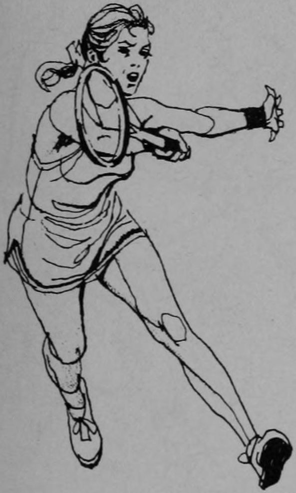
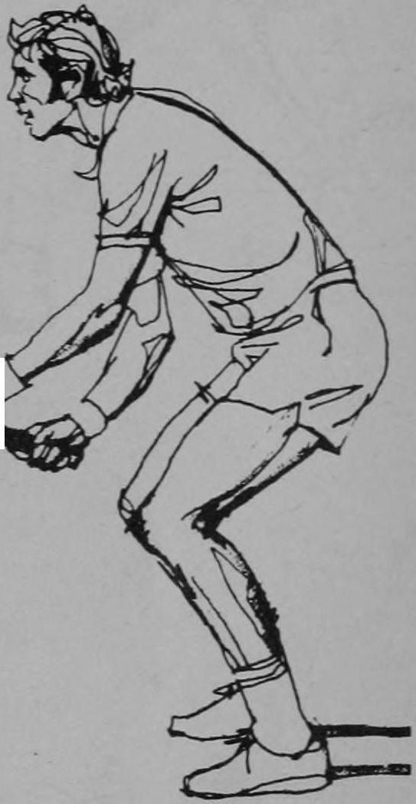

Huyền Thoại Rod Laver 228 Mẹo Vàng Thực Chiến Trọn Bộ 228 Minh Họa Chi Tiết
228 MẸO TENNIS CỦA ROD LAVER
228 Tennis Tips: Tinh hoa kỹ thuật, cơ học tiếp xúc và chiến thuật thi đấu đỉnh cao — Tái hiện với Giọng Huấn Luyện Viên Tự Nhiên & Hệ Thống Đồ Họa Vợt Graphite Hiện Đại.
Tác giả: Rod Laver & Jim Jonson Ấn bản gốc: 1977 (Rocket Shots) 228 Minh họa chi tiết (100%) Song ngữ Anh - Việt
Lời Giới Thiệu Của Huấn Luyện Viên: Nền Tảng Bất Biến Từ 1977 Đến Kỷ Nguyên Hiện Đại
Huyền thoại Rod Laver là tay vợt duy nhất trong lịch sử quần vợt 2 lần thâu tóm trọn vẹn Calendar Grand Slam (1962 & 1969). Năm 1977, ông cùng họa sĩ thể thao Jim Jonson đúc kết toàn bộ sự nghiệp vĩ đại thành 228 lời khuyên cô đọng, kèm các hình vẽ trực quan mang tên 228 Tennis Tips. Dù thiết bị thi đấu đã tiến hóa từ vợt gỗ sang vật liệu Carbon Graphite hiện đại, những nguyên lý sinh cơ học cốt lõi của Rod Laver—khóa cứng cổ tay, xoay thân sớm, đón bóng trước hông và triệt tiêu vung sau trên lưới—vẫn là nền tảng tối thượng của mọi nhà vô địch.
Bối Cảnh Lịch Sử (Vợt Gỗ 1977)
Mặt vợt 65–68 sq.in nhỏ, điểm ngọt bé, đòi hỏi độ chính xác tuyệt đối và cổ tay khóa cứng để không vặn mặt vợt khi chạm bóng.
Ứng Dụng Kỷ Nguyên Graphite (Hiện Đại)
Mặt vợt 98–100 sq.in trợ lực và tạo xoáy cực lớn. Các nguyên lý của Rod Laver (khóa cổ tay, đón bóng trước hông, triệt tiêu vung sau khi bắt volley) càng trở nên uy lực hơn gấp bội!
PHẦN 1 • TẬP TRUNG CHUYÊN ĐỀ
Cầm Vợt & Kỹ Thuật Nền Tảng Cốt Lõi
Grips & Core Fundamentals (Mẹo #1 – #20)
Rod Laver luôn khẳng định: Vợt hiện đại có thể trợ lực và mở rộng điểm ngọt (sweet-spot) gấp rưỡi vợt gỗ cổ điển, nhưng nếu cổ tay bạn lỏng lẻo khi bóng chạm mặt lưới, mặt vợt sẽ bị rung xoắn và bóng bay mất kiểm soát. Hãy giữ cổ tay vững như thép tại thời điểm chạm bóng, trong khi cánh tay và khớp vai luôn giữ sự thả lỏng linh hoạt.
Nhấp để phóng to
Đồ Họa Vợt Graphite Hiện Đại
Bảng Kỹ Thuật I-A: Cầm Vợt Vững Chắc & Khóa Cổ Tay Với Vợt Graphite Hiện Đại
Minh họa giải phẫu chuỗi động lực trên khung vợt Graphite Tournament thế hệ mới (Mặt vợt 100 sq.in, chạc ba mở Aerodynamic)
1. Khóa cứng cổ tay khi chạm bóng: Mặt vợt Graphite diện tích lớn sẽ bị xoay vặn nếu tay cầm lỏng lẻo. Khóa cổ tay vững chắc giúp triệt tiêu xung lực và định hướng bóng chính xác.
2. Trái tay một tay vươn dài: Đưa vai dẫn đường vuông góc với lưới, vung vợt ra xa khỏi thân người và giải phóng toàn bộ cánh tay xuyên qua điểm tiếp xúc.
3. Bắt Volley thấp hạ trọng tâm: Khuỵu sâu hai đầu gối giữ lưng thẳng, mặt vợt mở nhẹ đưa bóng vọt qua mép lưới mà không cần vung vợt lấy đà.
Nhấp để phóng to
Đồ Họa Vợt Graphite Hiện Đại
Bảng Kỹ Thuật I-B: Cẩm Nang 8 Cạnh Cán Vợt & Các Kiểu Cầm Vợt Hiện Đại (Bevel Guide)
Sơ đồ giải phẫu 8 vát cạnh (Bevels 1-8) trên cán vợt bát giác và vị trí khớp gốc ngón trỏ
Cạnh #2 (Continental Grip): Khớp gốc ngón trỏ đặt trên cạnh 2. Cầm vợt đa năng tối thượng cho Giao bóng, Volley, Smash, Cắt Slice và Bỏ nhỏ.
Cạnh #3 (Eastern Forehand): Đặt lòng bàn tay phẳng sau cán vợt. Đánh bóng phẳng uy lực, tiếp xúc bóng ngang tầm hông.
Cạnh #4 (Semi-Western Grip): Kiểu cầm vợt phổ biến nhất của quần vợt hiện đại, tạo độ xoáy Topspin cuộn bóng an toàn và cắn sâu vào sân đối phương.
Nếu bạn lỏng tay cầm, bạn không thể kiểm soát được đường bóng. Khi một quả bóng đánh mạnh chạm vào mặt lưới vợt, nó sẽ văng đi mất kiểm soát nếu cán vợt bị lỏng trong tay bạn. Tuyệt đối không được vẩy cổ tay ngoại trừ khi giao bóng và đập bóng trên cao (smash)—hãy tập luyện đánh các cú chạm đất (groundstrokes) với cổ tay cố định. Các ngón tay và cổ tay phải vững vàng nhưng cánh tay vẫn phải thả lỏng và linh hoạt.
"If you relax your grip, you cannot control the ball. When a firmly hit ball strikes the strings of your racket it will rebound wildly if your grip is relaxed. Do not use wrist snap except on the serve and overhead—practice hitting groundstrokes with a locked wrist. Wrist and fingers are firm but the arm is relaxed."
Động tác đánh trái tay về nhiều mặt thực ra lại thuận tự nhiên hơn. Chắc chắn bạn sẽ thấy thoải mái hơn khi vung vợt ra xa khỏi cơ thể thay vì quét ngang qua thân người như ở cú thuận tay. Hãy đứng nghiêng người so với lưới. Đưa vợt ra sau thật sớm. Dồn trọng tâm cơ thể vào cú đánh. Và hãy dẹp bỏ ngay tâm lý mặc cảm, sợ hãi về cú đánh trái tay này!
"The backhand action is in many ways the more natural side. It is definitely more comfortable to swing away from the body rather than across the body, as you do with a forehand. Get sideways to the net. Get your racket back early. Get your weight into the shot. Get over your bloody inferiority complex about this shot!"
RÈN LUYỆN SỰ TẬP TRUNG—HỌC CÁCH NHÌN BÓNG TẬN ĐIỂM TIẾP XÚC TRÊN MẶT VỢT!
DEVELOP CONCENTRATION—LEARN TO WATCH THE BALL ALL THE WAY ONTO THE RACKET!
Cú bắt lưới (volley) của bạn sẽ tiến bộ vượt bậc nếu bạn khép nhẹ khuỷu tay vào sát thân và cúi người về phía trước, đưa đầu lại gần quỹ đạo bay của bóng. Lúc này hãy xỉa thẳng qua tâm bóng với tay cầm chắc và cổ tay cố định vững chãi. Hãy chuyển toàn bộ trọng tâm cơ thể lên bàn chân trước.
"Your volley will improve if you keep your elbow tucked in slightly and bend forward putting your head closer to the trajectory of the ball. Now punch directly through the ball with a tight grip and firm wrist. Move your weight onto the front foot."
CẨN TRỌNG VỚI NHỮNG CÚ ĐÁNH DÙNG QUÁ NHIỀU CỔ TAY!
BE CAREFUL OF WRISTY SHOTS!
Tôi khuyên bạn nên tập đánh các cú bóng nảy trên sân với cổ tay được khóa chặt. Hãy khắc sâu trong tâm trí rằng một khi cây vợt bắt đầu lao về phía trước để tiếp xúc bóng, cổ tay của bạn phải tuyệt đối vững chắc! Bạn phải học được cách đánh cả cú thuận tay lẫn trái tay bằng các ngón tay và cổ tay ổn định trước khi nghĩ đến việc thêm các biến thể dùng cổ tay vào kho vũ khí của mình.
"I suggest that you practice hitting groundstrokes with a locked wrist. Concentrate on the idea that once your racket starts forward to meet the ball, your wrist will be absolutely firm! You must first learn to stroke both forehand and backhand groundstrokes with firm fingers and wrist before adding wrist shots to your arsenal."
BẠN CẦN TRỢ GIÚP KHI VỪA DI CHUYỂN VỪA ĐÁNH THUẬN TAY?
NEED HELP ON THOSE MOVING FOREHANDS?
Hãy thu ngắn biên độ mở vợt ra sau (backswing), và khi bạn tiến về phía bóng, hãy giữ đầu thấp xuống gần hơn với quỹ đạo bay của quả bóng đang tới. Đưa vợt xuyên qua bóng mà không được vẩy cổ tay, đồng thời vươn dài theo hướng bạn muốn điều bóng tới. Tuyệt đối không được ngước đầu lên quá sớm!
"Shorten your backswing and as you go to the ball keep your head down closer to the trajectory of the approaching ball. Bring the racket through without flicking your wrist and extend in the direction you wish to direct the shot. Do not pull up with your head!"
BẠN PHẢI LÀM NHIỀU HƠN LÀ CHỈ ĐƠN THUẦN ĐÁNH QUẢ BÓNG QUA LƯỚI
YOU'RE GOING TO HAVE TO DO MORE THAN JUST HITTING THE BALL
Hãy chủ động thăm dò điểm yếu của đối thủ, và một khi đã phát hiện ra, hãy tập trung khai thác triệt để vào đó. Điều đối thủ chạy khắp mặt sân rồi đánh thẳng vào điểm yếu của họ và nhanh chóng tiến lên dứt điểm điểm số. Hãy duy trì đấu pháp này chừng nào nó còn mang lại chiến thắng cho bạn.
"Probe for your opponent's weakness and when you discover it zero in on it. Move him around the court then hit to his weakness and move in for the kill. Maintain this pattern as long as it is winning for you."
HÃY GIÀNH ĐIỂM SỐ TIẾP THEO BẰNG NHỮNG CÚ LỐP BÓNG HOÀN HẢO!
OK, GALS, LET'S WIN THE NEXT ONE WITH SOME WELL-HIT LOBS!
Cú lốp bóng (lob) là một vũ khí cực kỳ nguy hiểm, ngay cả khi đối đầu với những tay vợt toàn diện. Nó khiến họ cảm thấy bất an khi đứng trên lưới và dẫn đến các pha xử lý hỏng—hãy đánh bóng nhẹ nhàng nhưng với biên độ vung vợt đầy đủ. Vung vợt từ dưới lên xuyên qua bóng với mặt vợt hơi mở. Và quan trọng nhất: hãy giữ bóng bay thật sâu về cuối sân!
"The lob is a dangerous weapon, even against polished players. It makes them insecure at the net and brings on errors—hit the ball gently, but with a full stroke. Come up through the ball with the face open. Keep it deep!"
BẠN KHÔNG NHẤT THIẾT PHẢI CÓ MẶT TRÊN SÂN MỚI TẬP ĐƯỢC!
YOU DON'T HAVE TO BE ON A COURT TO PRACTICE!
Hãy ra sân vườn cùng một người bạn cũng đang muốn nâng cao trình độ. Tìm một khoảng đất tương đối bằng phẳng và đứng cách nhau khoảng 10 thước (khoảng 9 mét). Bây giờ, để cải thiện cảm giác vợt và kỹ thuật bắt lưới, hãy chuyền bóng qua lại trên không, cẩn thận đưa bóng vào tầm bắt của bạn tập. Hãy chú ý bộ chân và giữ cổ tay thật chắc để hình thành khả năng kiểm soát bóng hoàn hảo!
"Get out in your yard with a fellow player who wants to improve. Find a fairly level area and position yourselves 10 yards apart. Now to improve your racket feel and volleying technique. Play the ball back and forth, carefully placing the ball to your partner on the fly. Mind your footwork and keep your wrist firm to develop good control!"
BẠN CÓ THỂ ĐẬP SMASH HIỆU QUẢ KHI ĐANG LÙI LẠI KHÔNG?
CAN YOU HIT AN EFFECTIVE SMASH WHILE BACKING UP?
Khi đối phương lốp bóng sâu, bạn thường phải vừa lùi vừa bật nhảy lên không để đập bóng. Hãy tập bước thật nhanh chân phải về phía sau. Tiếp theo, đạp mạnh chân phải để bật nhảy lên cao và ra sau, rồi tiếp đất bằng chân trái trong khi đang vung vợt đập bóng. Động tác bật nhảy đổi chân hình cây kéo (scissors kick) này sẽ giúp bạn trở thành một tay vợt đánh đôi lợi hại hơn rất nhiều.
"On deep lobs you will often have to hit while moving backwards and jumping into the air. Practice stepping quickly to the rear with your right foot. Next push off your right foot and jump up and back, landing on the left foot as you swing. This scissors kick action will allow you to be much more effective as a doubles partner."
Khi phản xạ trước một quả bóng đang bay tới, việc đôi chân nhanh nhẹn là điều tối quan trọng. Các tay vợt xuất sắc không bao giờ đứng bẹp cả bàn chân xuống đất khi tiếp cận bóng. Nếu bóng nảy dị thường, trượt nhanh vào người hoặc văng ra xa, hãy nhanh nhẹn và di chuyển cơ thể thật mau lẹ. Chính đôi chân linh hoạt sẽ tạo nên sự khác biệt giữa thắng và bại!
"In reacting to a moving ball it is absolutely essential to be quick footed. The better players are never flat-footed as they approach the ball. If the ball takes a funny bounce or skids into you or away from you, be nimble and move your tired body quickly. It can make the difference!"
KHI BẠN LAO LÊN LƯỚI—HÃY CHUẨN BỊ SẴN SÀNG THẬT SỚM!
WHEN YOU APPROACH THE NET—BE READY EARLY!
Đừng chờ đợi bóng bay qua mép lưới rồi mới chuẩn bị bắt volley! Hãy phán đoán góc đánh ngay từ khoảnh khắc bóng vừa rời khỏi mặt vợt của đối thủ, và lập tức đưa cây vợt của bạn vào vị trí sẵn sàng đón bóng.
"Do not wait for the ball to cross over the net to prepare for the volley! Read the angle of the ball as it leaves your opponent's racket and immediately start to move your racket into position for the volley."
Tập ở tốc độ một nửa không có nghĩa là bạn chỉ đánh nửa vòng vợt. Hãy vung vợt đầy đủ nhưng làm chậm tốc độ vung lại. Hãy tập trung vào nhịp điệu và thời điểm tiếp xúc bóng hoàn hảo. Cố gắng hoàn thiện bộ chân chuẩn xác. Những lỗi đánh lệch tâm vợt thường sẽ được khắc phục triệt để ở nhịp độ chậm này. Hãy quan sát đường bóng và vào bộ đón đánh thật chuẩn.
"This does not imply using half a stroke. Stroke the ball fully but slow down the swing. Work on the rhythm and timing of the shot. Attempt to get perfect footwork. Mis-hitting can usually be overcome at this slower tempo. Watch the trajectory of the ball and set up accordingly."
Tôi thấy rất nhiều người chơi ở các câu lạc bộ thường vung đập bóng ngang vai (sidearm overheads). Rất hiếm cú đánh như vậy đạt được độ chính xác hoặc tính ổn định. Hãy quan sát cách các tay vợt thi đấu chuyên nghiệp luôn nâng cao khuỷu tay lên khi đưa vợt lên từ phía sau lưng.
"I see a lot of sidearm overheads at the various clubs I frequent. Very few are either accurate or consistent. Note how the better tournament players get their elbows up as they bring the racket up from behind them."
ĐỘ CHẮC CHẮN TRONG TRẢ GIAO BÓNG QUAN TRỌNG HƠN TỐC ĐỘ!
SURENESS ON RETURN OF SERVE RATHER THAN SPEED!
Trong đánh đôi, hãy cố gắng khiến người giao bóng luôn phải phán đoán trong thế do dự—một cú gài bóng cắt nhẹ vào chân người giao bóng, một cú lốp qua đầu người đứng lưới, hay một cú xỉa chéo sân góc hẹp sẽ khiến đội bạn luôn bối rối. Thỉnh thoảng tung một cú bắn thẳng vào người đứng lưới hoặc dọc theo hành lang biên đôi sẽ ghìm chân không cho anh ta dám lao cắt bóng (poach).
"In doubles, try to keep the server guessing and hesitant—a soft chip shot at the server's feet, a lob over his partner's head, a sharply angled crosscourt will keep the other team guessing. An occasional blast right at the net man or down his alley will keep him from poaching."
Hãy cho cậu bé bắt đầu giao bóng với cây vợt được hạ thấp sau lưng như tư thế gãi lưng. Quả bóng nên được cầm nhẹ nhàng bằng các đầu ngón tay. Tung bóng êm ái, ngay phía trước vai trái. Đảm bảo bóng được tung đủ cao để có thể đánh bóng khi cánh tay duỗi thẳng hoàn toàn ở điểm cao nhất!
"Start him serving with that racket held down his back in the back-scratching attitude. The ball should be held lightly in the fingertips. Release the ball gently, directly in front of the left shoulder. Be sure the ball goes high enough so as to allow it to be struck with the arm fully extended!"
Hãy luôn cố gắng chủ động tiến về phía trước trong mọi cú bắt volley. Di chuyển tới sẽ giúp bạn dồn trọng lượng cơ thể vào cú đánh, ngăn không cho bóng rơi xuống quá thấp, và áp đảo tinh thần đối thủ bằng phong thái tự tin đầy tính tấn công đó.
"Try to keep moving forward on all those volleys. It will get your weight into the shot, prevent the ball from dropping too low, and generally intimidate your opponent by such an aggressive display of confidence."
GIỮA KIỂU CẦM EASTERN VÀ CONTINENTAL—CÁCH CẦM KIỂU ÚC
BETWEEN THE EASTERN AND THE CONTINENTAL—THE AUSTRALIAN GRIP
Nằm giữa kiểu cầm vợt Eastern và Continental là kiểu cầm vợt nổi tiếng của nước Úc (Australian grip). Nó cho phép bạn đánh được sự đa dạng cú đánh lớn nhất—bạn có thể đánh bạt (drive), cắt bóng (slice), lốp bóng (lob), hoặc với cùng một tư thế chuẩn bị, bạn có thể thực hiện một cú bỏ nhỏ tuyệt đẹp với cách cầm này.
"Between the Eastern and the Continental, you will find what is called the Australian grip. It allows for hitting the greatest variety of shots—you can drive it, slice it, lob it or, with the same preparation, lay in a beautiful dropshot with this grip."
Có những thời điểm một cú rướn người sải dài chân sẽ cứu được điểm số—hãy hạ quyết tâm rằng bạn sẽ đưa bằng được quả bóng qua lưới dù phải bứt tốc và vươn dài người đến đâu. Nếu đó là một cú giao bóng cực nhanh và ra mang góc xa, hãy hài lòng với việc chỉ cần chặn mặt vợt (block) để đưa bóng trở lại sân.
"There are times when a good lunge will do the trick—make up your mind that you're going to get the ball back over the net no matter how far you have to sprint and reach. If it's a fast serve and wide, be content to just block the ball back."
Khi quả bóng bay tới cách vùng đánh bóng chừng vài bước, hãy hướng bờ vai trước của bạn thẳng về phía quả bóng. Nếu quan sát những tay vợt hàng đầu, bạn sẽ thấy trục vai của họ tạo thành một mũi tên chỉ thẳng vào mục tiêu đang bay tới. Hãy thử áp dụng ngay!
"As the ball approaches to within a few feet of the striking zone, get your leading shoulder to point at the ball. If you observe the better players, you will note that an arrow extending through their shoulders would point at the approaching target. Try it!"
BÍ QUYẾT GIÚP BẠN GIỮ THÂN NGHIÊNG VÀ KHÔNG MỞ VAI QUÁ SỚM
HERE'S A TRICK TO STAY SIDEWAYS
Hãy duỗi tay không cầm vợt hướng về phía lưới trong suốt quá trình mở vợt ra sau. Vung vợt xuyên qua bóng và vươn dài về phía trước cho đến khi cán vợt chạm tới bàn tay kia. Điều này sẽ ngăn vai bạn mở ra quá sớm—nguyên nhân chính khiến bạn giật bóng lệch hướng thay vì thực hiện một cú vuốt bóng chuẩn xác.
"Extend your hand forward in the direction of the net during your backswing. Swing your racket through the ball extending forward until handle reaches other hand. This keeps you from opening your shoulders too soon causing you to pull the ball instead of stroking it."

Minh họa kỹ thuật #20
PHẦN 2 • TẬP TRUNG CHUYÊN ĐỀ
Cú Thuận Tay (Forehand) & Kiểm Soát Độ Xoáy
Forehand Groundstrokes & Spin Control (Mẹo #21 – #50)
Cú thuận tay là vũ khí ghi điểm chủ lực của bạn. Với vợt graphite hiện đại, bạn không cần phải vung vợt quá dài ra sau để lấy lực. Hãy mở vợt gọn gàng, hạ đầu vợt xuống thấp hơn bóng rồi tăng tốc vung từ dưới lên trên. Bí quyết quan trọng nhất: Điểm tiếp xúc bóng luôn nằm ở phía trước hông của bạn!
Nhấp để phóng to
Đồ Họa Vợt Graphite Hiện Đại
Bảng Kỹ Thuật II: Chuỗi Động Lực Cú Thuận Tay Hiện Đại (Modern Forehand Biomechanics)
Quy trình 2 pha chuẩn mực: Xoay thân trên sớm (Unit Turn) và Tiếp xúc bóng phía trước hông với vợt Carbon Aerodynamic
1. Xoay thân trên sớm (Unit Turn): Xoay vai và hông 90 độ ngay khi bóng rời vợt đối phương, tay không thuận chỉ theo bóng để giữ thăng bằng và căn cự ly.
2. Tiếp xúc bóng phía trước hông (Hit Out in Front): Trọng tâm dồn về chân trước, tăng tốc đầu vợt đánh xuyên qua tâm bóng ở vị trí đón bóng lý tưởng phía trước mũi chân.
3. Tận dụng độ ổn định xoắn của khung vợt Graphite: Cổ tay khóa vững giúp mặt vợt không rung lắc khi truyền toàn bộ động lượng cơ thể vào trái bóng.
Dù cho kỹ thuật các cú đánh của bạn đã được trau chuốt hoàn hảo đến đâu, sẽ có những tình huống mà chỉ có sự bùng nổ thể lực và một pha rướn người lăn xả mới có thể cứu vãn được điểm số. Khi đó, thể lực sẽ tạo ra sự khác biệt. Bạn nên dành thời gian chạy bộ và tập các bài tập thể lực dẻo dai nếu muốn trở thành một đấu thủ thực thụ trên sân.
"Despite all the grooming you've done on your strokes there will be times when only a burst of energy and a lunge will save the point. Conditioning then will make the difference. You had better spend some time running and doing calisthenics if you want to be a good competitor."
Một điều kiện tiên quyết cho cú đập bóng xuất sắc là phải đứng nghiêng người so với lưới. Một yếu tố khác là đảm bảo hai chân mở rộng vừa phải, thăng bằng. Đừng vung vợt vào quả bóng như thể đang đập ruồi. Hãy tưởng tượng bạn đang đóng một chiếc đinh ở điểm cao nhất mà bạn có thể với tới. Hãy nện một cú dứt khoát cắm thẳng xuống mặt sân!
"One requisite to a good overhead is to get sideways to the net. Another is to be sure the feet are comfortably apart. Do not swing at the ball as though it were a fly. Think of driving a nail at the highest point you can reach. Pound it with a hard downward hit!"
Nếu bạn thấy mình luôn đánh cùng một kiểu bóng trong một tình huống nhất định, ngay cả đối thủ chậm chạp nhất cũng sẽ bắt bài được lối chơi của bạn. Hãy thay đổi tốc độ và độ xoáy. Biến hóa chiến thuật linh hoạt. Hãy vận dụng trí tưởng tượng và sự sáng tạo, bạn sẽ thu về những phần thưởng xứng đáng.
"If you find yourself always hitting the same shot in a particular situation, even the slowest witted opponent will catch on to your game. Use some change-ups. Vary your tactics. Use some imagination, it will pay off."
Bạn có thực sự dõi theo quả bóng cho đến tận khoảnh khắc nó tiếp xúc với mặt lưới không? Quả bóng mới là thứ đòi hỏi sự tập trung tuyệt đối của bạn. Mặt sân đâu có di chuyển! Hãy dập tắt ý muốn liếc nhìn vội vã vào khoảnh khắc cuối cùng để xem đối thủ đang chạy đi đâu. Thói quen xấu đó chỉ khiến bạn đánh vào khung vợt mà thôi. Chẳng ai muốn những cú đánh hỏng như vậy cả, đúng không?
"Do you watch it all the way to the point of contact? It's the ball that demands your attention. The court is not moving! Defeat that desire to grab a quick look at the last moment to see where your opponent is going. It will only cause a lot of wood shots. Who needs these, right?"
Khuỵu gối và hạ thấp trọng tâm lại gần quỹ đạo bay của bóng sẽ mang lại cho bạn khả năng kiểm soát bóng tốt hơn và giúp bạn cảm thấy vô cùng vững chãi trong từng cú đánh chạm đất. Đừng đứng thẳng đơ rồi chỉ gập người ở thắt lưng.
"Bending your knees and getting down closer to the path of the ball will give you better control and make you feel much more solid on your groundstrokes. Don't be an upright stroker who bends only from the waist."
Đừng chỉ khẽ vuốt quả bóng trở lại sân khi bạn đã chiếm lĩnh vị trí trên lưới. Hãy bước tới, xỉa dứt khoát xuyên qua bóng với cổ tay siết chặt, và tạo độ cắn sắc bén cho cú volley. Hãy làm cho quả bóng trượt sát mặt sân sau khi nảy!
"Don't just pat the ball gently back when you're at the net. Step forward, punch firmly through the ball with a tight grip, and put some bite into the volley. Make the ball skitter low off the court!"
MỘT SỐ ĐIỂM SỐ QUAN TRỌNG HƠN HẲN NHỮNG ĐIỂM KHÁC!
CERTAIN POINTS ARE MORE IMPORTANT THAN OTHERS!
Điểm số 30 đều, điểm kết thúc game (game point) và điểm bẻ giao bóng (break point) là những thời khắc then chốt quyết định cục diện của mọi trận đấu tennis. Khi bước vào các điểm số mang tính bước ngoặt này, hãy nâng cao tối đa sự tập trung, chơi những đường bóng có độ an toàn và xác suất thành công cao nhất, tuyệt đối không tự đánh hỏng.
"The 30-all point, game point, and break point are the critical junctures of every tennis match. When you get to these big points, heighten your concentration, play high-percentage shots, and don't give away unforced errors."
Tránh hiện tượng khựng lại hay ngập ngừng trong chuỗi động tác giao bóng. Động tác tung bóng và hạ đầu vợt ra sau lưng cần diễn ra mượt mà thành một vòng lặp liên tục, giải phóng tốc độ đầu vợt tối đa tại điểm chạm bóng cao nhất.
"Avoid hitching or hesitating in your service motion. The toss and the racket drop should flow naturally into one rhythmic, continuous loop that unleashes maximum rackethead speed at the apex."
Cú trái hai tay mang lại sự ổn định phi thường và khả năng ngụy trang hướng đánh rất cao, đặc biệt trước những quả bóng rơi thấp và khi trả giao bóng. Nhưng hãy nhớ: bạn phải xoay vai trọn vẹn hơn và thực hiện các bước chân điều chỉnh nhỏ hơn vì tầm với của bạn bị giới hạn hơn.
"The two-handed backhand provides tremendous stability and disguise, particularly on dipping balls and returns. But remember: you must turn your shoulders more completely and take smaller adjusting steps because your reach is shorter."
Rất nhiều đối thủ phán đoán trước rằng bạn sẽ đánh vào khoảng sân trống và lập tức bứt tốc chạy về hướng đó. Thỉnh thoảng đánh một cú ngược hướng di chuyển của họ, đưa bóng trở lại góc sân họ vừa rời đi, sẽ khiến họ bị lỡ trớn và mất thăng bằng hoàn toàn.
"Many players anticipate that you will hit into the open court and start running there early. An occasional shot behind them, right back to the corner they just left, will catch them flat-footed and off balance."
Sự căng cứng là kẻ thù số một của những đường vung vợt mượt mà. Hãy thả lỏng cổ và hai vai trước mỗi điểm số. Một cơ bắp được thả lỏng sẽ phản ứng nhanh hơn và tạo ra độ vung roi cùng tốc độ đầu vợt lớn hơn nhiều so với một cơ bắp đang gồng cứng.
"Tension is the enemy of smooth stroking. Relax your neck and shoulders before each point. A relaxed muscle reacts faster and generates greater whip and racket speed than a rigid, tight muscle."
DÀNH CHO CÁC TAY VỢT TRẺ—HÃY PHÁT TRIỂN VÒNG VUNG TỰ NHIÊN VÀ DÀI
FOR JUNIOR PLAYERS—DEVELOP A LONG, EASY SWING
Đừng để các tay vợt nhí hình thành thói quen vung vợt giật cục và ngắn ngủn. Hãy khuyến khích các em xoay vai trọn vẹn, mở vợt êm ái và thực hiện động tác theo đà (follow-through) cao, vươn dài để tạo nền tảng kỹ thuật vững chắc suốt đời.
"Don't let young players develop choppy, short swings. Encourage a full shoulder turn, a flowing backswing, and a high, elongated follow-through to build fundamentally sound, enduring strokes."
Đôi tay mềm mại và khả năng ngụy trang khéo léo là tất cả. Hãy giữ nguyên tư thế chuẩn bị như một cú đánh bạt thông thường cho đến khoảnh khắc cuối cùng, sau đó nới lỏng nhẹ tay cầm, luồn vợt xuống dưới bóng với mặt vợt mở và giảm chấn cú chạm bóng.
"Soft hands and subtle disguise are everything. Disguise the shot as a routine drive until the final moment, then soften your grip slightly, slide under the ball with an open face, and cushion the impact."
Hãy chuẩn bị vợt ở vị trí cao, vượt lên trên tầm quả bóng đang tới. Khi bước chân vào sân, hãy đưa cạnh đáy của mặt vợt dẫn đường và miết cắt từ trên xuống xuyên qua bóng, duỗi thẳng cánh tay về phía trước theo hướng bóng bay.
"Prepare high, well above the incoming ball. As you step in, lead with the bottom edge of the racket and slice downward and through the ball, extending your arm fully forward along the line of flight."
Đừng trở thành một tay vợt một màu chỉ biết chôn chân sau vạch cuối sân. Hãy học cách tấn công vào các quả bóng ngắn, chuyển đổi trạng thái mượt mà lên phía trước và dứt điểm điểm số dứt khoát trên lưới bằng những cú bắt volley xỉa bóng sắc sảo.
"Don't be a one-dimensional player anchored only behind the baseline. Learn to attack short balls, transition comfortably forward, and close out points decisively at the net with punch volleys."
DÙNG TAY KHÔNG CẦM VỢT CHỈ THẲNG VÀO QUẢ BÓNG TRÊN CAO!
POINT AT THE BALL WITH YOUR NON-RACKET HAND!
Trong mỗi pha đập smash trên cao, hãy giơ thẳng bàn tay trái không cầm vợt lên hướng vào quả bóng đang rơi. Hành động này ép trục vai bạn xoay vuông góc với lưới, giữ cho đầu ngẩng cao và cung cấp một đường ngắm chuẩn xác để canh thời điểm tiếp xúc bóng hoàn hảo.
"On every overhead smash, extend your free left hand up toward the falling ball. This forces your shoulders into a perpendicular turn, keeps your head up, and gives you a precise sightline for clean timing."
HÃY HƯỚNG TỚI SỰ THANH THOÁT VÀ THĂNG BẰNG KHI DI CHUYỂN!
WORK FOR GRACE AND BALANCE WHEN MOVING!
Những nhà vô địch vĩ đại luôn khiến môn quần vợt trông thật nhẹ nhàng nhờ sự thăng bằng động vượt trội. Hãy giữ trọng tâm cơ thể ở mức thấp, di chuyển bằng những bước lướt êm ái và thiết lập một chân đế vững chãi trước khi vung vợt vào bóng.
"Great champions make tennis look effortless because of superior dynamic balance. Keep your center of gravity low, take smooth gliding steps, and establish a firm base before launching into your swing."
ĐỪNG LUÔN ĐÁNH CÙNG MỘT CÚ TỪ CÙNG MỘT VỊ TRÍ TRÊN SÂN!
DON'T ALWAYS HIT SAME SHOT FROM SAME COURT SPOT!
Sự dễ đoán là con đường tự sát trong thi đấu quần vợt đỉnh cao. Từ góc sân trái tay sở trường, lúc hãy đánh cú bạt chéo sân, lúc đổi sang cú cắt dọc dây, và thỉnh thoảng bất ngờ tung ra một cú lốp bóng topspin tấn công.
"Predictability is suicidal in tournament tennis. From your favorite deep backhand corner, hit crosscourt drives, change to down-the-line slices, and occasionally throw in an offensive topspin lob."
Không được vẩy cổ tay khi tung bóng lên. Hãy nâng quả bóng lên bằng một cánh tay thẳng và tĩnh tại xuất phát từ khớp vai, nhả bóng ở ngang tầm mắt để quả bóng bay lên êm ái mà không bị xoáy hay chao đảo.
"Do not flick your wrist when tossing the ball up. Lift the ball up with a straight, calm arm from the shoulder, releasing it at eye level so it ascends without spinning or wobbling."
HÃY DỪNG LẠI VÀ THIẾT LẬP TƯ THẾ! ĐỪNG VỪA CHẠY VỪA ĐÁNH!
STOP AND SET UP! DON'T HIT ON THE FLY!
Rất nhiều lỗi tự đánh hỏng xảy ra chỉ vì người chơi vẫn đang bị trôi hoặc vừa chạy vừa tiếp xúc bóng. Hãy tới bóng sớm, đạp phanh hãm đà, cố định đôi chân xuống mặt sân và thực hiện cú đánh từ một bệ đỡ thăng bằng, vững chắc.
"Many errors happen because players are still drifting or running while contacting the ball. Arrive early, put on the brakes, set your feet, and stroke from a stable, grounded platform."
Đảm bảo bạn di chuyển sao cho quả bóng rơi hơi chếch về phía trước của vai cầm vợt, tuyệt đối không để bóng bay qua sau đầu. Nếu để quả lốp rơi quá sâu ra sau gáy, bạn sẽ mất hoàn toàn đòn bẩy, lực đánh và khả năng kiểm soát góc đập.
"Make sure you position yourself so the ball drops slightly in front of your hitting shoulder, never behind you. If you allow a lob to get behind your head, you lose leverage, power, and angle control."
HÃY LUÔN DUY TRÌ VỊ TRÍ SO LE BỌC LÓT CHO ĐỒNG ĐỘI
TRY TO STAY ACROSS THE COURT FROM YOUR PARTNER
Trong đánh đôi, hãy di chuyển cùng nhau như thể hai người được nối với nhau bằng một sợi dây vô hình. Khi đồng đội bị kéo dạt ra ngoài mép biên trái, bạn phải lập tức trượt ngang sang để bịt kín khu vực giữa sân. Đừng bao giờ để lộ khe hở trung lộ cho đối phương khai thác.
"In doubles, move together like two connected partners on a string. When your partner is pulled wide left, shift across to cover the middle. Never leave the center seam wide open for opponents to exploit."
GẶP TRỤC TRẶC KHI GIAO BÓNG? HÃY KIỂM TRA LẠI CÚ TUNG BÓNG!
HAVING PROBLEMS SERVING? CHECK YOUR TOSS!
Mười lần thì có đến chín lần giao bóng thiếu ổn định là do cú tung bóng chập chờn. Nếu tung quá xa về phía trước, bóng sẽ rúc lưới; nếu quá ra sau, bóng sẽ bay ra ngoài sân; nếu lệch sang hai bên, bạn sẽ mất hoàn toàn khả năng kiểm soát xoáy slice hoặc kick. Hãy thuần thục việc đặt quả bóng chuẩn xác vào đúng một túi không gian tiếp xúc duy nhất.
"Nine times out of ten, erratic serving is caused by an erratic ball toss. If the toss is too far forward, you hit into the net; if too far back, you hit long; if wandering sideways, you lose slice or kick control. Master placing the ball consistently into the exact same striking pocket."
Đừng cố tung ra một cú đánh ăn điểm kỳ diệu nhưng xác suất cực thấp khi bạn đang đứng cách ngoài biên đôi tới 1 mét rưỡi. Hãy đưa lên một cú lốp bóng phòng thủ thật cao và sâu về cuối sân để mua lấy vài giây quý giá chạy về chiếm lại khu vực trung tâm vạch cuối sân.
"Don't attempt a low-percentage miracle winner from five feet outside the doubles alley. Throw up a high, deep defensive lob to buy yourself precious seconds to sprint back to the center of the baseline."
Đừng chờ đợi quả bóng trên cao rơi xuống tầm thấp vừa tay—nơi bạn sẽ mất hết góc đánh và đà tiến. Hãy đón đánh cú đập smash ở chính điểm cao nhất của tầm với khi toàn bộ trọng lượng cơ thể đang lao tới vào trong sân.
"Don't wait for the overhead to drop down into your comfort zone where you lose angle and momentum. Meet the smash at the very peak of your reach while your body weight is driving forward into the court."
TIẾP CẬN LƯỚI—HÃY SỬ DỤNG KIỂU CẦM VỢT CONTINENTAL
APPROACHING THE NET—USE THE CONTINENTAL GRIP
Lao lên lưới thành công đòi hỏi phản xạ cực kỳ nhanh. Hầu hết các tay vợt bắt lưới lão luyện đều ưu tiên dùng kiểu cầm Continental (cầm vợt số 2) trên lưới vì nó loại bỏ hoàn toàn việc phải đổi tay cầm giữa cú bắt lưới thuận tay và trái tay.
"Getting to the net successfully requires fast reactions. Most accomplished volleyers prefer the Continental or backhand grip at the net because it eliminates the need to change grips between forehand and backhand volleys."
Hãy luôn giữ đầu vợt cao hơn cổ tay trong mọi thời điểm. Một đầu vợt bị chúc xuống sẽ dẫn đến những cú volley rúc lưới và mất kiểm soát lỏng lẻo. Hãy bước chéo chân đối diện thật quyết liệt khi bạn xỉa dứt khoát xuyên qua quả bóng.
"Keep the racket head above your wrist at all times. A drooping racket head leads to netted volleys and sloppy control. Step aggressively across with the opposite foot as you punch firmly through the ball."
Đừng bổ hay đập vào quả bóng như thể bạn đang đánh bóng golf trên cọc đặt bóng. Hãy cố gắng cảm nhận quả bóng lưu lại trên mặt lưới trong một tích tắc của khả năng điều khiển và định hướng độ xoáy trước khi giải phóng nó.
"Don't swat or slap at the ball like you are hitting a golf ball off a tee. Strive to feel the ball dwell on your strings for that split second of control and spin direction before releasing it."
Bộ chân chuẩn xác là chìa khóa thành công trong hầu hết mọi cú đánh. Những bước chân dặm nhỏ điều chỉnh nhanh cho phép bạn định vị bản thân ở khoảng cách hoàn hảo so với quả bóng, tạo ra lực đánh và tốc độ vô cùng thanh thoát.
"Good footwork is the key to success in almost every shot. Quick adjusting stutter steps allow you to position yourself at the precise distance from the ball, giving effortless power and pace to the stroke."
HÃY HẠ ĐẦU VÀ HAI VAI THẤP XUỐNG VÀ HƯỚNG VỀ PHÍA TRƯỚC!
GET HEAD AND SHOULDERS DOWN AND FORWARD!
Với những quả bóng thấp, đừng bao giờ chỉ gập người ở thắt lưng trong khi hai chân thẳng đơ như khúc gỗ. Hãy khuỵu gối, hạ vai ngang tầm với quả bóng và dồn lực lao tới bằng toàn bộ chuỗi động lực của cơ thể.
"On lower balls, never bend merely at the waist while keeping your legs stick-straight. Bend your knees, lower your shoulders to the ball level, and drive forward with your entire kinetic chain."

Minh họa kỹ thuật #50
PHẦN 3 • TẬP TRUNG CHUYÊN ĐỀ
Cú Trái Tay (Backhand) & Kỹ Thuật Cắt Bóng (Slice)
Đừng bao giờ mặc cảm hay sợ hãi cú đánh trái tay! Thực tế, vung vợt ra xa thân người tự nhiên và thoải mái hơn vung ngang qua ngực. Hãy xoay vai sớm, đưa vợt ra sau trước khi bóng nảy, và bước chân dồn toàn bộ trọng lượng cơ thể vào cú đánh. Khi gặp bóng khó, cú cắt Slice ổn định sẽ là chiếc phao cứu sinh tuyệt vời nhất.
Nhấp để phóng to
Đồ Họa Vợt Graphite Hiện Đại
Bảng Kỹ Thuật III: Cơ Học Trái Tay 1 Tay, 2 Tay & Cú Cắt Bóng Hiện Đại
Phân tích kỹ thuật thực chiến trên nền tảng khung vợt thi đấu hiện đại
1. Trái tay một tay xoay vai vuông góc: Vai trước trỏ thẳng vào quả bóng bay tới, tay không thuận hỗ trợ giữ chạc vợt giúp mở vợt cao và ổn định.
2. Trái tay hai tay tăng tốc hông: Hai bàn tay sát nhau trên cán vợt, khuỵu gối sâu và xoay mở hông mạnh mẽ để đánh bóng uy lực khi bóng nảy cao ngang ngực.
3. Cú cắt Slice từ cao xuống thấp: Khóa cứng cổ tay, miết cạnh dưới vợt trượt nhẹ qua đáy bóng để tạo quỹ đạo bay căng, bóng nảy trượt sát mặt sân không nảy cao.
TRƯỚC KHI GIAO BÓNG—HÃY TẬP TRUNG TỐI ĐA VÀO ĐIỂM ĐẾN!
PRIOR TO YOUR SERVE—CONCENTRATE ON TARGET!
Trước khi bắt đầu tung bóng, hãy dừng lại một nhịp và chọn một điểm rơi cụ thể trong ô giao bóng—góc chữ T, vào thẳng thân người, hay xẻ góc mang ra biên ngoài. Việc hình dung rõ ràng quỹ đạo bay trong tâm trí sẽ nâng cao đáng kể tỷ lệ giao bóng thành công của bạn.
"Before you begin your toss, pause and pick a specific spot in the service box—the T, the body, or wide to the corner. Visualizing the trajectory will dramatically improve your serving percentage."
ĐÔI KHI CHỈ CẦN GIỮ ĐƯỢC BÓNG TRONG CUỘC LÀ ĐỦ ĐỂ THẮNG
SOMETIMES IT'S ENOUGH TO JUST STAY IN THE POINT
Bạn không cần phải cố tung ra một cú đánh ăn điểm chói sáng trong mọi pha bóng. Những đường bóng qua lại sâu, kiên nhẫn và an toàn vượt qua vạch giao bóng cuối cùng sẽ buộc đối thủ thiếu kiên nhẫn phải tự đánh hỏng.
"You don't have to hit a dazzling winner on every exchange. Deep, patient rally balls placed safely past the service line will eventually force an error from an impatient opponent."
Đối với các em nhỏ và người mới tập chơi chưa có đủ sức mạnh cổ tay và cẳng tay, cú đánh trái hai tay là một tài sản vô giá. Nó gia cố cánh tay tiếp xúc bóng và đảm bảo một khối xoay vai đồng nhất, gọn gàng.
"For youngsters and beginners lacking wrist and forearm strength, the two-handed backhand is an invaluable asset. It reinforces the hitting arm and ensures a solid, compact unit turn."
ĐỪNG VUNG VỢT QUÁ RỘNG KHI BẮT VOLLEY—HÃY CHẶN VÀ XỈA!
DON'T SWING AT THE VOLLEY—BLOCK AND PUNCH!
Sai lầm phổ biến nhất của người chơi phong trào trên lưới là mở vợt rộng như đánh bóng dưới vạch cuối sân. Hãy triệt tiêu gần như hoàn toàn động tác mở vợt ra sau; chỉ cần đón bóng ở phía trước mặt bằng một cú chặn xỉa ngắn gọn và đanh chắc.
"The most common flaw among club players at the net is taking a massive groundstroke swing. Keep your backswing virtually non-existent; just catch the ball out front with a short, punchy block."
CHUYỂN TRỌNG TÂM LÊN CHÂN TRƯỚC KHI TIẾN VÀO ĐÁNH BÓNG!
UNWEIGHT YOUR FRONT FOOT TO STEP IN!
Khi bạn mở vợt ra sau bên phía thuận tay, hãy trụ vững chân sau, chuyển toàn bộ trọng tâm cơ thể về phía trước và bước dứt khoát về phía lưới bằng bàn chân trước để truyền trọn vẹn lực đẩy vào quả bóng.
"As you take the racket back on the forehand side, plant your back foot, transfer your weight forward, and step cleanly toward the net with your front foot to drive power into the shot."
HƯỚNG ĐÁY CÁN VỢT VỀ PHÍA SÂN ĐỐI PHƯƠNG KHI MỞ VỢT
POINT THAT HANDLE TOWARD THE OPPOSITE COURT
Dẫn đầu bằng đáy chuôi cán vợt trong lúc vung về phía trước sẽ tạo ra độ trễ (lag) và gia tốc tối đa. Khi bạn kéo cán vợt lao về phía quả bóng, đầu vợt sẽ bứt tốc lao xuyên qua điểm tiếp xúc bóng mạnh mẽ như một ngọn roi vút.
"Leading with the butt cap of the racket on your forward swing creates maximum lag and snap. As you pull the handle through toward the ball, the racket head will accelerate through contact like a whip."
CÓ BÁC NÀO TRONG ĐỘ TUỔI TRUNG CAO NIÊN ĐANG BỊ ĐAU KHUỶU TAY?
ARE SOME OF YOU SENIORS HAVING ELBOW TROUBLE?
Cơn đau khuỷu tay (tennis elbow) thường bắt nguồn từ việc dẫn vợt bằng khuỷu tay bị co gập, tiếp xúc bóng muộn ra sau người, hoặc dùng mặt vợt căng cước quá cứng. Hãy đánh bóng ở phía trước thân người, để khớp vai và thân mình hấp thụ lực va đập, và hãy hạ độ căng dây cước xuống mềm mại hơn.
"Elbow pain usually comes from leading with a bent elbow, hitting late, or using a racket with strings strung too tight. Hit out in front of your body, let your shoulder and trunk absorb the shock, and lower your string tension."
ĐỪNG CỐ ĐÁNH XOÁY TOPSPIN KHI ĐANG PHẢI CHẠY CỨU TRÁI TAY!
DON'T TRY TO TOPSPIN THOSE RUNNING BACKHANDS!
Khi bạn đang phải bứt tốc tối đa ra biên bên phía trái tay, việc cố gắng cuộn cổ tay tạo topspin sẽ dẫn đến những cú đánh cạch khung và bay ra ngoài. Hãy đánh một cú cắt bóng underspin chắc chắn—nó an toàn hơn rất nhiều, giúp bạn giữ thăng bằng và khiến bóng bay trượt sát đất.
"When you are stretched wide on the full sprint on your backhand side, trying to roll topspin will result in mishits and wood shots. Hit a firm underspin slice—it is safer, keeps you balanced, and stays low."
Cú bỏ nhỏ không phải là sự xúc phạm đối thủ; nó là một vũ khí chiến thuật hoàn toàn hợp lệ. Khi đối thủ bị ghìm chặt sâu sau vạch cuối sân để chờ đón một cú đánh bạt nặng nề tiếp theo, hãy khẽ luồn một cú bỏ nhỏ êm như lông vũ rơi ngay sau mép lưới.
"A drop shot is not an insult to your opponent; it is a legitimate tactical weapon. When your opponent is pinned deep behind the baseline anticipating another heavy baseline drive, slide a feather-light drop shot just over the net."
ĐỪNG CÓ LƯỜI BIẾNG! HÃY VẬN ĐỘNG ĐÔI CHÂN CỦA BẠN!
DON'T BE SO BLOODY LAZY! MOVE THOSE FEET!
Đôi chân lười biếng sẽ tạo ra những cú đánh tồi tệ. Nếu bạn chỉ đứng bẹp chân một chỗ rồi nghiêng ngả người sang bên để với bóng, bạn sẽ không bao giờ có được sự ổn định. Hãy ép bản thân bước thêm ba bước chân nhỏ để vào được vị trí đón đánh hoàn hảo nhất.
"Lazy feet make bad strokes. If you just stand flat-footed and lean over sideways to reach balls, you'll never develop consistency. Push yourself to take the extra three steps to get in prime position."
VUNG QUÉT BÓNG VỀ PHÍA TRƯỚC TRONG CÚ TIẾP CẬN LƯỚI (APPROACH)
SWEEP THAT BALL FORWARD ON YOUR APPROACH SHOT
Một cú đánh tiếp cận lưới (approach shot) phải đâm sâu xuyên suốt vào sân đối phương. Hãy vung quét qua quả bóng với động tác theo đà dài và tiếp tục duy trì đà lao tới khi bạn lướt lên vị trí rào lưới.
"An approach shot must penetrate deep into the opponent's court. Sweep through the ball with a long, low-to-high or level follow-through and stay in forward motion as you glide toward the net position."
HÃY PHÁT TRIỂN MỘT CÚ GIAO BÓNG XOÁY SLICE HIỆU QUẢ!
DEVELOP AN EFFECTIVE SLICE SERVE!
Một cú giao bóng slice cong vòng ra xa người đỡ bóng sẽ mở toang toàn bộ khoảng sân đối diện. Hãy miết quanh mép ngoài của quả bóng từ hướng 2 giờ sang 8 giờ và để độ xoáy kéo phăng đối thủ hoàn toàn ra ngoài biên sân đơn.
"A slice serve that curves away from the receiver opens up the entire court. Brush around the outside edge of the ball from 2 o'clock to 8 o'clock and let the spin pull the opponent completely off the singles court."
HÃY HIỂU VỀ NGHỆ THUẬT QUẦN VỢT XÁC SUẤT (PERCENTAGE TENNIS)!
LET'S UNDERSTAND PERCENTAGE TENNIS!
Hãy đánh bóng qua phần mép lưới thấp nhất (khu vực giữa lưới) và hướng vào phần sân dài nhất (đường chéo sân). Đừng mạo hiểm đánh những cú dọc dây ép sát biên trừ khi bạn nhận được một quả bóng ngắn, nảy lơ lửng ngay trước mặt.
"Hit over the lowest part of the net (the center) and into the longest part of the court (crosscourt). Avoid gambling on tight down-the-line shots unless you have received a short, sitting ball."
SỰ THĂNG BẰNG VÀ ĐĨNH ĐẠC—PHONG THÁI CỦA CÁC CHUYÊN GIA!
BALANCE AND POISE—THE EXPERT'S STYLE!
Hãy quan sát những tay vợt vĩ đại nhất: thân trên của họ giữ được sự tĩnh tại và đĩnh đạc phi thường trong và sau khi chạm bóng. Hãy triệt tiêu thói quen lắc đầu giật cục hay vặn vẹo thân trên mất kiểm soát để giữ cho điểm tiếp xúc bóng luôn chuẩn xác tuyệt đối.
"Watch the greatest players: their upper bodies remain remarkably still and poised during and after ball strike. Eliminate excessive head tossing and wild upper-body thrashing to keep your contact pure."
Nếu bạn để bóng rơi xuống thấp rồi mới bắt volley, bạn buộc phải đánh ngửa bóng lên, tạo cơ hội cho đối thủ tung cú passing dễ dàng. Hãy chủ động đón đánh bóng ngay khi nó còn ở tầm cao hơn mép lưới để bạn có thể xỉa cắm bóng xuống ghi điểm trực tiếp.
"If you let the ball sink low before volleying, you must hit upward, giving the opponent an easy passing target. Attack the ball high above the tape where you can punch downward for winners."
Ngay giây phút bạn nhận diện quả bóng đang bay về phía trái tay, hãy xoay hông và vai cùng một lúc như một khối thống nhất. Sự chuẩn bị sớm sẽ biến một pha chống đỡ hoảng loạn thành một cú đánh bạt tấn công đầy uy lực.
"The second you identify the ball heading to your backhand, turn your hips and shoulders in unison. Early preparation turns a panicked defensive block into an aggressive driving stroke."
SỬ DỤNG ĐÔI CHÂN ĐỂ TẠO SỨC BẬT BÙNG NỔ KHI GIAO BÓNG!
USE THE LEGS FOR SERVE EXPLOSION!
Lực phát bóng bắt nguồn từ bàn chân, đầu gối và khớp hông, chứ không đơn thuần từ cánh tay. Hãy khuỵu sâu cả hai đầu gối vào tư thế ngắm bắn (trophy pose), sau đó nén người và đạp mạnh từ ức bàn chân lên cao để tiếp xúc bóng ở điểm vươn tay tối đa.
"Serve power originates in the feet, knees, and hips, not just the arm. Bend both knees deeply into a trophy pose, then coil and push upward off the balls of your feet to strike at maximum extension."
CÚ ĐÁNH THUẬN TAY BỘ ĐÓNG TRUYỀN THỐNG (CLOSED STANCE)
THE CLOSED STANCE FOREHAND DRIVE
Bước chân trước chéo qua sẽ khóa hông và vai vào đúng góc đánh, cho phép bạn chuyển dịch toàn bộ trọng lượng cơ thể thẳng tắp vào quả bóng để đạt được độ xuyên phá đường thẳng tối đa.
"Stepping across with your front foot locks your hips and shoulders in place, allowing you to transfer full body weight directly into the shot for maximum linear penetration."
Cú lốp bóng sẽ phát huy sức hủy diệt lớn nhất khi đối thủ đang áp sát mép lưới để rình chặn một cú passing nhanh. Hãy khẽ nhấc quả bóng bổng lên mượt mà vừa đủ qua khỏi tầm với của cây vợt đối phương.
"A lob is most devastating when your opponent is crowding tight to the net expecting a fast passing shot. Loft the ball smoothly just beyond their outstretched racket reach."
CÓ PHẢI BẠN ĐANG HƠI LƯỜI VẬN ĐỘNG CHÂN TRÊN LƯỚI?
ARE YOU A BIT FOOT LAZY AT THE NET?
Lối chơi trên lưới đòi hỏi những bước nhảy chia chân (split-step) nhanh như chớp. Ngay khi đối thủ vừa chạm bóng, hãy thực hiện cú nhảy split-step để bạn có thể đạp mạnh sang bất kỳ hướng nào nhằm cắt đứt góc đánh của họ.
"Net play requires lightning-quick split steps. As your opponent contacts the ball, make your bounce split-step so you can push off explosively in either direction to cut off angles."
GIỮ HAI BÀN TAY SÁT NHAU TRÊN CÁN VỢT TRÁI HAI TAY!
KEEP HANDS TOGETHER ON TWO-HANDED SHOTS!
Khi đánh trái hai tay, tuyệt đối không được để khoảng trống cách xa giữa hai bàn tay. Hãy giữ hai tay ôm khít vào nhau trên cán vợt để chúng vận hành như một bộ cơ cấu điều khiển đồng nhất và mạnh mẽ.
"On two-handed backhands, never leave a gap between your two hands. Keep them snug together on the handle so they act as a single powerful steering mechanism."
Trong 5 phút khởi động trước trận đấu, hãy chú ý xem đối thủ thích đánh bên nào hơn, liệu họ có gặp khó khăn với những quả bóng nảy cao không, và mức độ tự tin của họ trên lưới ra sao.
"During the 5-minute pre-match warm-up, notice which side your opponent prefers, whether they struggle with high bouncing balls, and how comfortable they feel at the net."
Trong cú trái một tay, khi cánh tay cầm vợt vung lao về phía trước, hãy vung cánh tay không cầm vợt thẳng ra sau. Lực đối trọng này sẽ ngăn không cho thân trên của bạn bị xoay vặn quá đà ra khỏi cú đánh.
"On a one-handed backhand, as your hitting arm drives forward, throw your non-racket arm straight back. This counter-balance prevents your torso from spinning out of the shot."
BẠN ĐÃ THUẦN THỤC CÚ BỎ NHỎ TRÊN LƯỚI (DROP VOLLEY) CHƯA?
HAVE YOU MASTERED THE DROP VOLLEY?
Hãy thả lỏng tay cầm ngay khoảnh khắc tiếp xúc bóng và khẽ thụt đầu vợt lại một chút để triệt tiêu toàn bộ tốc độ của bóng, khiến nó rơi chết lịm trong ô giao bóng đối phương êm đềm như một giọt nước.
"Relax your grip at contact and draw the racket head back slightly to absorb the ball's pace, dropping it dead inside the opponent's service box like a drop of water."
Cầm vợt bóp chặt đến trắng bệch các đốt ngón tay sẽ gây căng cứng toàn bộ cẳng tay và bóp chết cảm giác bóng. Hãy duy trì một tay cầm vững chãi nhưng mềm mại, cho phép sự linh hoạt tự nhiên của cổ tay và cảm giác vợt thanh thoát.
"Holding the racket with white knuckles creates tension in the forearm and kills touch. Maintain a firm but supple grip that allows natural wrist flexion and feel."
ĐỂ TẤN CÔNG—HÃY BẮT BÓNG Ở TẦM NGANG THẮT LƯNG TẠI ĐỈNH NẢY
TO ATTACK—CATCH BALL WAIST HIGH AT TOP OF BOUNCE
Đừng để những quả bóng ngắn rơi tụt xuống dưới đầu gối. Hãy bước hẳn vào trong vạch cuối sân, bắt bóng ngay tại đỉnh cao nhất của quỹ đạo nảy ở tầm thắt lưng thoải mái, và đánh bạt xuyên qua bóng để tạo độ sâu áp đảo.
"Don't let short balls drop below your knees. Step inside the baseline, take the ball at the crest of its bounce at comfortable waist height, and drive through for aggressive depth."
Động tác xoay cẳng tay (pronation) và quất gập cổ tay qua đỉnh quả bóng tại điểm tiếp xúc chính là nơi sinh ra sức mạnh phát bóng uy lực mà không tốn sức. Kết thúc cú đánh với cây vợt hướng chéo xuống qua hông bên kia.
"Pronation of the forearm and snapping the wrist over the ball at contact is where effortless service power is born. Finish with the racket pointing down past your opposite hip."
Hãy bứt tốc với cây vợt đã được hạ thấp sẵn sàng. Luồn mặt vợt mở xuống dưới bóng và xỉa góc chéo sân hiểm hóc hoặc đẩy bóng sâu vào góc sân trống ngay sau lưng đối thủ đang lao lên.
"Sprint with your racket already extended low. Slide the open face under the ball and either flick it sharply crosscourt or push it deep into the open court behind the charging net rusher."
BẠN CÓ HAY BỊ TIẾP XÚC BÓNG MUỘN? HÃY MỞ VỢT TRƯỚC KHI BÓNG NẢY!
ARE YOU ALWAYS LATE? PREPARE ON THE BOUNCE!
Nếu bạn đợi đến khi quả bóng nảy trên phần sân của mình rồi mới mở vợt ra sau, bạn sẽ luôn bị muộn bóng. Động tác mở vợt của bạn phải được hoàn tất trọn vẹn trước khi quả bóng chạm đất trên sân bạn.
"If you wait until the ball bounces on your side to take your racket back, you will always be late. Your backswing must be fully completed before the ball hits your side of the court."
ĐƯA VỢT VÀO BÓNG TRÊN CÙNG MẶT PHẲNG VỚI QUỸ ĐẠO BÓNG!
MOVE RACKET INTO BALL ON SAME PLANE AS BALL!
Cân chỉnh đường vung vợt trùng khớp với góc độ và quỹ đạo bay của quả bóng đang tới sẽ tối đa hóa diện tích vùng tiếp xúc và tạo ra cú chạm bóng ngọt ngào, tinh khôi nhất.
"Matching your swing path to the angle and trajectory of the incoming ball maximizes contact surface area and produces the cleanest, sweetest hit possible."
Minh họa kỹ thuật #80
PHẦN 4 • TẬP TRUNG CHUYÊN ĐỀ
Kỹ Thuật Giao Bóng (Serve) & Trả Giao Bóng (Return)
Giao bóng là cú đánh duy nhất bạn có quyền kiểm soát 100% tình huống mà không bị đối phương can thiệp. Trước khi tung bóng, hãy hít thở sâu và chọn một điểm ngắm cụ thể trong ô giao bóng. Đừng giao bóng thụ động—hãy coi cú giao bóng như phát súng lệnh mở màn tấn công chiếm lĩnh thế trận.
Nhấp để phóng to
Đồ Họa Vợt Graphite Hiện Đại
Bảng Kỹ Thuật IV-A: Chuỗi Phát Lực Giao Bóng Hiện Đại & Úp Cẳng Tay Pronation
Tối ưu hóa lực bộc phát từ mặt đất lên đỉnh đầu qua chuỗi động lực 3 giai đoạn
1. Tư thế chiếc cúp (Trophy Pose): Gập sâu đầu gối tích lũy lực đàn hồi, tay tung bóng vươn thẳng đứng như trụ cột dẫn hướng, đầu vợt gập sâu sau lưng (back-scratch).
2. Điểm chạm bóng đỉnh cao & Pronation: Bật nhảy vươn người hết tầm, úp xoay cẳng tay từ trong ra ngoài (pronation) tại điểm tiếp xúc để đạt vận tốc đầu vợt tối đa.
3. Tiếp đất chủ động vào trong sân: Chân sau vung xuyên qua giữ thăng bằng, tiếp đất vững vàng bằng chân trước bên trong vạch baseline sẵn sàng cho pha bóng tiếp theo.
Nhấp để phóng to
Đồ Họa Vợt Graphite Hiện Đại
Bảng Kỹ Thuật IV-B: Cơ Học Giao Bóng Xoáy Hiện Đại: Kick Serve Đối Đầu Slice Serve
So sánh quỹ đạo vung đầu vợt và góc cắn bóng giữa cú Giao bóng cống (Kick) và Giao bóng xoáy ngang (Slice)
Giao bóng Kick Serve (Topspin-Kick): Tung bóng trên đỉnh đầu hơi chếch sau lưng, uốn cong lưng và quét đầu vợt cuộn từ 7h lên 1h. Bóng vọt qua mép lưới cao rồi cắm sập và nảy bốc lên tầm vai đối thủ.
Giao bóng Slice Serve: Tung bóng chếch sang phải (với người thuận tay phải), miết mặt vợt chém quanh cạnh ngoài từ 3h sang 9h. Bóng lượn cong trên không và trượt ngang kéo đối thủ ra ngoài mép sân.
Nhấp để phóng to
Đồ Họa Vợt Graphite Hiện Đại
Bảng Kỹ Thuật IV-C: Tư Thế Trả Giao Bóng Tấn Công & Bước Nhảy Split-Step Tiến Vào Sân
Kỹ thuật phản xạ đối phó cú giao bóng sấm sét trên nền tảng khung vợt Graphite trợ lực
Tư thế đón bóng chủ động: Đứng bên trong vạch baseline, hai chân rộng bằng vai nhún trên ức bàn chân, thân trên đổ nhẹ về trước, giữ vợt hướng thẳng về phía máy chủ giao bóng.
Bước bật nhảy Split-Step tiến tới: Bật nhảy nhịp nhàng ngay khi đối phương chạm bóng, dùng bước rút ngắn đà vung (compact block) đấm trả bóng sâu vào trung lộ hoặc chân đối thủ.
Tuyệt đối không quay lưng lại với lưới khi đang lùi lại để đón đập smash. Hãy trượt ngang bước đuổi hoặc bước chéo chân lùi lại trong khi đôi mắt vẫn khóa chặt liên tục vào quả bóng trên không trung.
"Never turn your back on the net when retreating for an overhead smash. Side-shuffle or cross-step backwards while keeping your eyes locked continuously on the ball in flight."
BẠN CÓ BIẾT CÁCH THỰC HIỆN MỘT CÚ LỐP BÓNG TOPSPIN?
DO YOU KNOW HOW TO HIT A TOPSPIN LOB?
Hạ đầu vợt xuống thấp dưới quả bóng, miết mạnh vút lên trên lưng quả bóng với gia tốc cổ tay cực cao để tạo độ xoáy cuộn nặng, khiến bóng cắm nhanh qua đầu người đứng lưới rồi nảy vọt ra xa.
"Drop the racket head below the ball, brush up sharply across the back of the ball with high wrist acceleration, and impart heavy topspin so the ball dips over the net man and runs away."
Một cú đánh tuyệt vời nhưng bị đối thủ đoán trước sẽ mất đi một nửa sức mạnh. Hãy xây dựng tư thế chuẩn bị giống hệt nhau cho các cú đánh bạt, cắt bóng và bỏ nhỏ để đối phương không thể phán đoán ý đồ cho tới khi bóng chạm mặt vợt.
"A great shot that is read in advance loses half its power. Develop identical wind-ups for your drives, slices, and drop shots so your opponent cannot predict your intention until contact."
BẠN CÓ DÀNH THỜI GIAN ĐỂ LUYỆN TẬP CÚ LỐP BÓNG KHÔNG?
DO YOU SPEND TIME PRACTICING YOUR LOB?
Hầu hết người chơi phong trào đánh hàng ngàn cú thuận tay và trái tay nhưng bỏ quên hoàn toàn các bài tập lốp bóng. Hãy dành ra 15 phút trong mỗi buổi tập để căn chỉnh độ chính xác cho cả cú lốp phòng thủ lẫn tấn công.
"Most club players hit thousands of forehands and backhands but completely neglect lobbing drills. Spend 15 minutes every session dialing in your defensive and offensive lob precision."
KHI TAY TUNG BÓNG LÊN CAO—HÃY ƯỠN LƯNG TẠO HÌNH CÁNH CUNG!
AS YOUR ARM TAKES THE BALL UP—ARCH YOUR BACK!
Ưỡn nhẹ lưng khi cánh tay tung bóng vươn lên cao sẽ tích trữ lực vào cơ cốt lõi và cơ bụng như một cánh cung được kéo căng, sẵn sàng bung mạnh về phía trước để nện vào quả bóng tại thời điểm tiếp xúc.
"Arching your back slightly as your tossing arm reaches upward loads your core and abdominal muscles like a drawn bow, ready to snap violently forward into the ball at contact."
HÃY LÀM CHO NHỮNG CÚ BẮT VOLLEY THẬT ĐANH VÀ DỨT KHOÁT!
LET'S MAKE THOSE VOLLEYS CRISP AND PUNCHY!
Tránh vung vẩy hay múc hất bóng khi bắt volley. Volley là một cú đấm xỉa bóng, không phải một cú vung dài. Hãy giữ cổ tay bẻ khóa ra sau, đón bóng ở ngay phía trước bờ vai dẫn đường và đấm xuyên thẳng qua tâm bóng.
"Avoid slinging or scooping your volleys. A volley is a punch, not a stroke. Keep the wrist laid back, meet the ball well in front of your lead shoulder, and punch straight through."
CÓ PHẢI NHỮNG CÚ ĐÁNH NẶNG VÀ LỐI CHƠI LƯỚI VỮNG CHẮC CỦA ĐỐI THỦ ĐANG HỦY DIỆT BẠN?
DO HARD DRIVES AND A SOLID NET GAME DESTROY YOU?
Nếu bạn đang bị áp đảo bởi một đối thủ đánh bóng rất nặng và lên lưới kín kẽ, đừng đôi công húc đầu vào đá. Hãy dùng những cú cắt bóng thấp, mềm mại vào sát dây giày của họ và những cú lốp bóng cầu vồng bổng sâu để đẩy họ bật bãi khỏi khu vực thoải mái.
"If you are being overpowered by a big hitter at the net, stop trading fire with fire. Use soft, low chips at their shoelaces and high, looping lobs to push them away from their comfort zone."
DÕI MẮT THEO BÓNG TỪ LÚC TUNG CHO ĐẾN HẾT ĐỘNG TÁC!
KEEP YOUR EYE ON THE BALL FROM TOSS TO FINISH!
Khi tôi nói hãy nhìn quả bóng, tôi muốn bạn phải dõi theo từng đường rãnh nỉ của nó từ khoảnh khắc nó rời bàn tay tung bóng khi phát bóng cho đến khi kết thúc trọn vẹn cú theo đà. Đừng bao giờ cúi đầu hay ngước nhìn sớm xem bóng đã rơi vào đâu.
"When I say watch the ball, I mean track the seams from the moment it leaves your hand on the serve until you complete your follow-through. Never drop your head early to see where the ball landed."
KHI TRẢ GIAO BÓNG TRONG ĐÁNH ĐÔI—TRÁNH XA TẦM CỦA NGƯỜI ĐỨNG LƯỚI!
IN SERVICE RETURN—KEEP BALL AWAY FROM NET MAN!
Trong đánh đôi, 80% lỗi trả giao bóng xuất phát từ việc dâng bóng vào tầm bắt của tay vợt đứng lưới. Hãy hướng cú trả bóng đi thấp và chéo sân, an toàn tuyệt đối khỏi tầm với của người đứng lưới đội bạn.
"In doubles, 80 percent of return errors come from giving the net poacher a free volley. Direct your return low and crosscourt, safely away from the poaching net player."
HẠ TRỌNG TÂM THẬT THẤP ĐỂ ĐÓN TRẢ NHỮNG ĐƯỜNG BÓNG SÂU VÀ NẶNG!
GET DOWN LOW TO RETURN DEEP, HEAVY SHOTS!
Khi quả bóng trượt thấp và cắm sâu gần vạch cuối sân của bạn, việc chỉ cúi gập lưng là vô dụng. Hãy hạ thấp khớp hông, gập sâu cả hai đầu gối gần như tư thế squat và đánh bốc lên xuyên qua vùng tiếp xúc bóng.
"When the ball skids low and deep near your baseline, bending at the waist is useless. Drop your hips, bend both knees almost into a squat, and drive up through the contact zone."
BẺ KHÓA CỔ TAY RA SAU VÀ ĐƯA CẢNG TAY CHỐNG ĐỠ PHÍA SAU MẶT VỢT
LAY YOUR WRIST BACK AND GET FOREARM BEHIND VOLLEY
Để chịu được những cú bắn passing cực nặng của đối phương khi bạn đang ở trên lưới, hãy bẻ khóa cổ tay ra sau để cẳng tay tạo thành một chiếc nêm vững chắc ngay phía sau mặt vợt. Quả bóng sẽ bật ngược trở lại một cách đanh gọn mà không hề bị rung lắc.
"To withstand heavy, blasting passing shots at the net, lay your wrist back so your forearm forms a solid wedge directly behind the racket face. The ball will bounce off cleanly with zero wobble."
Đánh bóng khi nó đã rơi sát mặt đất sẽ đẩy bạn vào một tư thế co cụm phòng thủ vụng về. Hãy chủ động tiến lên đón đánh bóng ngay ở đỉnh của quỹ đạo nảy nơi bạn có thể tấn công đầy uy lực.
"Striking the ball as it falls close to the ground puts you in an awkward defensive crouch. Step up to meet it at the crest of the bounce where you can attack with authority."
ĐỪNG ĐỂ ĐỐI THỦ CÓ BẤT KỲ GIÂY PHÚT NÀO ĐƯỢC NGHỈ NGƠI GIỮA CÁC ĐƯỜNG BÓNG!
DON'T LET OPPONENT GET ANY REST BETWEEN SHOTS!
Hãy đánh bóng ngay khi nó đang trên đà nảy lên (on the rise) để cướp thời gian của đối thủ. Bằng cách dồn ép nhịp phục hồi của họ, bạn sẽ buộc họ phải chuẩn bị vội vã và tự đánh hỏng.
"Take the ball on the rise to steal time from your opponent. By rushing their recovery, you force them into hurried preparation and unforced errors."
DƯỜNG NHƯ NHIỀU BẠN CHƯA BIẾT RẰNG ĐẦU GỐI CỦA MÌNH CÓ THỂ KHUỴU XUỐNG ĐƯỢC!
SOME OF YOU DON'T REALIZE YOUR KNEES WILL BEND!
Môn quần vợt được chơi bằng đôi chân chứ không phải bằng cột sống. Hãy biến việc khuỵu gối thành một thói quen ý thức trước mỗi cú đánh. Sự co gập đầu gối chuẩn xác sẽ mang lại sự thăng bằng, lực phát và độ chính xác tuyệt đối.
"Tennis is played with the legs, not the spine. Make it a conscious habit to flex your knees before every stroke. Good knee flexion provides balance, power, and shot precision."
BẠN CÓ MUỐN CÚ ĐÁNH TRÁI TAY CỦA MÌNH CÓ UY LỰC MẠNH MẼ HƠN?
WOULD YOU LIKE MORE BACKHAND POWER?
Uy lực lớn hơn đến từ một vòng xoay vai trọn vẹn. Hãy xoay người cho đến khi lưng của bạn hơi hướng về phía đối thủ, sau đó giải phóng độ xoắn của hông và thân mình mượt mà vào quả bóng.
"More power comes from a complete shoulder turn. Turn until your back is facing slightly toward your opponent, then uncoil your hips and torso smoothly into the ball."
Quất đầu vợt quá đà khi bắt volley sẽ khiến bóng bay mất kiểm soát ra ngoài biên hoặc quá dài. Hãy khóa chặt cổ tay, dựng một mặt vợt vững chắc và đâm xuyên qua quả bóng bằng một cú xỉa ngắn gọn, đanh thép.
"Whipping the racket head on a volley leads to spraying balls wide and long. Lock your wrist firmly, present a solid racket face, and drive through the ball with short, crisp authority."
Đừng gù lưng lom khom trên quả bóng. Hãy giữ cột sống tương đối thẳng và hạ thấp trọng tâm bằng cách khuỵu gối và hạ khớp hông. Một bờ lưng thẳng sẽ bảo toàn sự thăng bằng động hoàn hảo của cơ thể.
"Do not hump over the ball like a hunchback. Keep your spine relatively upright and get low by bending your knees and dropping your hips. A straight back preserves dynamic equilibrium."
DÙNG TAY TRÁI ĐỂ NGĂN ĐỘNG TÁC MỞ VỢT QUÁ RỘNG TRÊN LƯỚI!
USE LEFT HAND TO PREVENT VOLLEY OVERSWING!
Trong các cú bắt volley trái tay, hãy giữ bàn tay không thuận đỡ lấy cổ vợt cho đến khi cú xỉa về phía trước bắt đầu. Động tác này sẽ ngăn chặn triệt để việc mở vợt quá rộng và đảm bảo thời điểm tiếp xúc bóng tinh khôi.
"On backhand volleys, keep your non-dominant hand supporting the racket throat until the forward punch begins. This strictly limits excessive backswing and guarantees pristine timing."
CÁC CÚ ĐÁNH KHI ĐANG DI CHUYỂN LÀ NHỮNG CÚ ĐÁNH KHÓ KHĂN NHẤT!
MOVING SHOTS ARE BY FAR THE MOST DIFFICULT!
Tỷ lệ mắc lỗi tự đánh hỏng của mọi tay vợt đều tăng vọt khi phải vừa chạy vừa đánh. Hãy rèn luyện các bài tập thăng bằng động, thu gọn vòng vung vợt và giữ cho đầu luôn tĩnh lặng khi bứt tốc ngang sân.
"Every player's error percentage rises sharply on the run. Practice dynamic balance drills, shortening your swing and maintaining a calm head while sprinting across court."
Bạn không thể điều khiển hướng bóng nếu đầu vợt cứ lỏng lẻo, chao đảo trong tay bạn. Độ vững chắc của tay cầm tại thời điểm tiếp xúc bóng là điều kiện tiên quyết không thể thỏa hiệp để kiểm soát hướng đánh.
"You cannot steer the ball if the racket head is flopping around loose in your hand. Grip firmness at impact is non-negotiable for directional control."
Đặt mặt vợt hơi mở nhẹ và xỉa thẳng xuyên qua đường bay của bóng. Cổ tay được khóa cứng sẽ ngăn không cho đầu vợt bị vặn xoay khi chạm bóng lệch tâm.
"Position the racket face open slightly and punch straight through the line of flight. The solid wrist prevents the racket head from turning on off-center hits."
Đứng chen quá gần vào quả bóng sẽ làm gò bó đường vung vợt và ép bạn phải co gập khuỷu tay như cánh gà. Hãy tạo cho mình một khoảng cách thông thoáng để duỗi thẳng cánh tay xuyên qua vùng tiếp xúc bóng, giải phóng lực đánh tự nhiên.
"Crowding the ball cramps your swing and forces you to chicken-wing your elbow. Give yourself room to extend your arm fully through the contact zone for free-flowing power."
Khuỵu đầu gối về phía trước sẽ tự nhiên đẩy hông của bạn tiến vào trong sân và tạo nên đường cong hình cánh cung kinh điển của cơ thể mà không gây chấn thương cho vùng thắt lưng.
"Bending your knees forward naturally thrusts your hips out into the court and creates that classic power arch in your spine without straining your lower back."
NÂNG ĐẦU VỢT LÊN CAO, CHỨ ĐỪNG NÂNG KHUỶU TAY LÊN!
LIFT THE RACKET HEAD, NOT YOUR ELBOW!
Khi vươn lên đón những cú volley trên cao, hãy nâng đầu vợt lên bằng cẳng tay và vòng xoay vai. Nếu bạn nâng khuỷu tay cao hơn đầu vợt, bạn chắc chắn sẽ táng thẳng quả bóng vào chân lưới.
"When reaching for high volleys, elevate the racket head with your forearm and shoulder turn. If you raise your elbow higher than the racket head, you will dump the ball into the bottom of the net."
HÃY ĐÁNH BÓNG QUA MÉP LƯỚI VỚI MỘT KHOẢNG CÁCH AN TOÀN!
GET BALL UP AND OVER NET TAPE BY A SAFE MARGIN!
Nhắm đường bóng bay cao hơn mép lưới từ 60 cm đến 1 mét trong các cú đánh từ vạch cuối sân sẽ cắt giảm một nửa số lỗi tự đánh hỏng của bạn, đồng thời giữ cho bóng rơi sâu sát vạch đáy sân đối phương.
"Aiming two to three feet above the net tape on your baseline drives cuts your unforced errors in half while keeping the ball landing deep near the opponent's baseline."
CÚ BẮT LƯỚI TRÁI TAY TRÊN RẤT CAO ĐÒI HỎI KỸ NĂNG BẬC THẦY!
THE VERY HIGH BACKHAND VOLLEY REQUIRES GREAT SKILL!
Cú bắt lưới trái tay trên tầm cao là một trong những cú đánh khó khăn nhất của môn quần vợt. Hãy xoay lưng gần như hoàn toàn về phía lưới, bước chéo chân phải sang và xỉa mạnh mẽ về phía trước và chúc xuống.
"The high backhand volley is one of the most difficult shots in tennis. Turn your back almost completely to the net, step across with your right foot, and punch forward and downward firmly."
Mọi cú đánh vĩ đại trong quần vợt đều chia sẻ một dấu ấn tuyệt đối: điểm tiếp xúc bóng luôn nằm ở phía trước khớp hông dẫn đường. Đánh bóng muộn sẽ cướp đi của bạn quyền kiểm soát, sức mạnh và độ xoáy.
"Every great stroke in tennis shares one absolute hallmark: contact is made well in front of the lead hip. Hitting late robs you of control, power, and spin."
VƯƠN CAO NGƯỜI ĐÓN VOLLEY TRÊN CAO, GIỮ ĐẦU HƯỚNG VỀ PHÍA TRƯỚC!
STRETCH UP FOR HIGH VOLLEYS, KEEP HEAD FORWARD!
Đừng ngả ngửa người ra sau khi vươn lên đón những quả bóng bổng lơ lửng trên lưới. Hãy kiễng trên các đầu ngón chân, vươn cao người, giữ cằm và đầu hướng về phía trước và đập bóng cắm xuống mặt sân.
"Don't fall backwards when reaching up for high floaters at the net. Stretch upward onto your toes, keep your chin and head tracking forward, and drive the ball down into the court."
Bất cứ khi nào có thể, hãy đón đánh bóng ở tầm ngang ngực hoặc thắt lưng thoải mái thay vì chờ đợi cho đến khi nó rơi rụng xuống sát mặt sân. Điểm tiếp xúc trên cao cho phép bạn đánh cắm bóng xuống các khoảng sân trống.
"Whenever possible, take the ball at comfortable chest or waist height rather than waiting until it drops down near the court surface. High contact allows you to hit down into the open court."
BẠN CÓ MUỐN DỨT ĐIỂM CÚ ĐÁNH NÀY ĐỂ GIÀNH ĐIỂM WINNER?
LIKE TO PUT THIS SHOT AWAY FOR A WINNER?
Khi một quả bóng yếu ớt lơ lửng ở tầm ngang vai trên lưới, đừng rụt rè. Hãy bước dứt khoát chân chéo sang, quất đanh xuyên qua quả bóng với cổ tay khóa chặt và xỉa góc thật gắt ra sát vạch biên.
"When a weak ball sits up around shoulder height at the net, do not be timid. Step decisively across, snap through the ball with a locked wrist, and angle it sharply to the sideline."
Đừng giật vợt chệch khỏi hướng đánh ngay sau khi vừa chạm bóng. Hãy vươn dài cây vợt theo đúng đường bóng dự định ít nhất 45 cm sau điểm tiếp xúc trước khi khép vòng theo đà.
"Do not pull the racket off line immediately after impact. Extend your racket along the intended line of flight for at least 18 inches after contact before wrapping into your follow-through."
KỸ THUẬT XỬ LÝ NHỮNG CÚ BẮT LƯỚI TẬN MANG BIÊN RỘNG
TECHNIQUES FOR RETURNING THOSE WIDE VOLLEYS
Với những cú volley ra xa tận mép biên, bước chân đầu tiên của bạn phải là một cú sải chân dài chéo góc. Hãy thiết lập một mặt vợt vững chắc ở ngay phía trước quả bóng và mượn chính tốc độ của bóng để đổi hướng chéo sân.
"On wide volleys, your first step must be a deep diagonal lunge. Get the racket face established firmly in front of the ball and use the ball's own pace to redirect it crosscourt."
ĐÔI KHI BẠN BẮT BUỘC PHẢI VẨY CỔ TAY TRONG TÌNH HUỐNG KHẨN CẤP!
OCCASIONALLY YOU WILL HAVE TO FLICK YOUR WRIST!
Dù cổ tay khóa chặt là nguyên tắc vàng cho sự ổn định cơ bản, nhưng khi bị kéo giãn hết tầm với ở thế cùng đường, một cú vẩy cổ tay khẩn cấp có thể quất một đường bóng passing thần sầu vượt qua tầm với của đối thủ đang lao lên lưới.
"While a locked wrist is the golden rule for basic consistency, when stretched out of position at full extension, an emergency wrist flick can whip a defensive passing shot past a rushing net man."
CÚ TRÁI HAI TAY ĐÒI HỎI VÒNG XOAY VAI PHẢI SÂU HƠN NỮA!
TWO-HANDED BACKHAND REQUIRES MORE SHOULDER TURN!
Bởi vì việc đặt cả hai tay lên cán vợt sẽ hạn chế độ vươn dài của cánh tay, bạn bắt buộc phải xoay vai vượt quá 90 độ để tích trữ đủ độ xoắn lò xo và đòn bẩy phát lực.
"Because having two hands on the grip restricts your arm extension, you must turn your shoulders past 90 degrees to create sufficient coil and leverage."
BẠN CÓ CHẮC CHẮN RẰNG MÌNH ĐANG ĐÁNH XUYÊN QUA TÂM BÓNG?
ARE YOU SURE THAT YOU'RE HITTING THROUGH THE BALL?
Những cú đánh quẹt sượt qua bóng hay động tác gạt nước kính xe (windshield wiper) quá sớm chỉ tạo ra những quả bóng lơ lửng, ngắn và yếu ớt. Hãy đưa mặt lưới đánh xuyên thẳng qua lõi quả bóng trước khi bắt đầu cuộn theo đà lên trên hoặc qua vai.
"Glancing blows and premature windshield wiper motions cause short, weak floaters. Drive the strings squarely through the core of the ball before initiating your upward or across follow-through."
Khi lên lưới, thời gian phản xạ chỉ tính bằng tích tắc. Bí quyết vàng của Rod Laver là: TUYỆT ĐỐI KHÔNG VUNG VỢT RA SAU! Hãy đặt sẵn mặt vợt phía trước mắt, bước chân dồn trọng tâm tới và đấm (punch) dứt khoát xuyên qua quả bóng. Biến cây vợt của bạn thành bức tường kiên cố chặn đứng mọi nỗ lực của đối thủ.
Nhấp để phóng to
Đồ Họa Vợt Graphite Hiện Đại
Bảng Kỹ Thuật V: Nghệ Thuật Đè Bóng & Bắt Lưới Volley Không Vung Sau
Kỹ thuật phản xạ cự ly gần với mặt vợt Carbon có độ ổn định xoắn cao (Torsional Stability)
1. Bắt thuận tay xỉa đấm dứt khoát: Triệt tiêu hoàn toàn động tác vung sau, ép khuỷu tay gọn gàng trước ngực, bước chân trước tới và xỉa thẳng qua đường bay bóng.
2. Bắt trái tay giữ đầu vợt cao: Khóa cứng cổ tay, giữ mặt vợt luôn cao hơn cổ tay để tạo điểm tựa đè bóng nặng và sắc bén xuống sân đối phương.
3. Bắt bóng thấp khuỵu gối: Hạ thấp trọng tâm bằng hai chân thay vì cúi gập lưng, mở nhẹ góc mặt vợt để nâng bóng vượt qua mép lưới an toàn.
Khi di chuyển ngang trên lưới để cắt đứt một đường bóng góc rộng, đừng bao giờ chạy song song dọc theo mép lưới. Hãy lao chéo góc về phía trước hướng thẳng vào quả bóng để bẻ gãy góc đánh của đối thủ.
"When moving across the net to cut off an angled shot, never move laterally along the net. Angle diagonally forward toward the ball to cut down the opponent's angle."
KHI BẠN BUỘC PHẢI ĐÁNH TỪ BỘ CHÂN MỞ (OPEN STANCE)
WHEN YOU HAVE TO HIT FROM AN OPEN STANCE
Trước những đường bóng nhanh ra xa mép biên khi bạn không kịp bước chéo chân, hãy cắm trụ vững chãi bằng bàn chân bên ngoài, nén lực vào hông và xoay trục thân mình bùng nổ để giải phóng lực đánh.
"On fast, wide balls when you have no time to step across, plant your outside foot firmly, load your hip, and rotate your core explosively to generate power."
ĐỂ THỰC HIỆN CÚ BẮT VOLLEY TRÁI TAY GÓC RỘNG—HÃY BƯỚC CHÉO CHÂN!
TO MAKE THAT WIDE BACKHAND VOLLEY—STEP ACROSS!
Hãy sải bước mạnh mẽ bằng bàn chân phải (đối với người thuận tay phải) chéo ngang qua thân người. Đưa toàn bộ cơ thể vào phía sau quả bóng sẽ mang lại đòn bẩy để chuyển hướng những cú passing góc rộng vào các góc sân trống.
"Lunge hard with your right foot (for right-handers) across your body. Getting your body behind the ball gives you leverage to redirect wide passing shots into open corners."
Chỉ ngón trỏ của bàn tay không cầm vợt thẳng vào quả bóng đang tới cho đến tích tắc trước khi chạm bóng sẽ đảm bảo đầu bạn giữ nguyên vị trí và đôi mắt theo dõi đường bóng chuẩn xác tuyệt đối.
"Pointing your non-hitting index finger toward the incoming ball until milliseconds before contact ensures your head stays still and your eyes track the ball accurately."
ƯỚC MUỐN SẼ CHẲNG THAY ĐỔI ĐƯỢC GÌ! CHỈ CÓ LUYỆN TẬP MỚI TẠO RA KẾT QUẢ!
WISHING WON'T MAKE IT HAPPEN! PRACTICE WILL!
Những nhà vô địch không được tạo ra dưới ánh đèn rực rỡ của sân trung tâm; họ được tôi luyện qua hàng ngàn cú vung lặp đi lặp lại trên những sân tập vắng lặng. Hãy đổ mồ hôi trên sân tập và rồi sự điêu luyện đỉnh cao sẽ tự khắc tìm đến.
"Champions are not made on center court under the lights; they are forged through thousands of repetitive swings on quiet practice courts. Put in the sweat and mastery will follow."
Khi một quả bóng nảy vọt lên cao quá vai, bạn có hai sự lựa chọn: hoặc là chủ động tiến lên đè bóng ngay khi nó đang trên đà nảy lên, hoặc lùi lại hai bước để đón đánh khi nó rơi xuống vùng đánh thuận lợi.
"When a ball kicks high above your shoulders, you have two choices: either move in aggressively to take it on the rise, or retreat two steps and let it drop into your strike zone."
Độ xoáy topspin được tạo ra bằng cách miết vợt từ dưới lên trên lưng quả bóng nhờ cẳng tay và vòng xoay vai, chứ không phải bằng việc vặn bẻ cổ tay dữ dội tại thời điểm tiếp xúc—nguyên nhân chính khiến bóng cắm thẳng vào lưới.
"Topspin is generated by brushing up the back of the ball using your forearm and shoulder rotation, not by violently twisting your wrist at contact which leads to netting balls."
Một cú cắt trái tay xoáy đanh là một trong những vũ khí thanh lịch và mang tính sát thương cao nhất của môn quần vợt. Hãy giữ cổ tay bẻ khóa ra sau và lướt mép vợt xuyên qua đáy quả bóng như một lưỡi dao sắc lẹm.
"A biting slice backhand is one of the most elegant and destructive weapons in tennis. Keep your wrist laid back and slide the bevel through the bottom of the ball with a flat, knife-like edge."
HÃY HẠ THẤP TRỌNG TÂM XUỐNG ĐÓN NHỮNG CÚ VOLLEY DƯỚI THẤP!
C'MON GALS, GET DOWN TO THOSE LOW VOLLEYS!
Với những cú volley thấp dưới mép lưới, bạn bắt buộc phải khuỵu gối sâu cho tới khi tầm mắt ngang bằng với quả bóng. Mở nhẹ mặt vợt để nhấc quả bóng bổng nhẹ qua lưới kèm theo độ xoáy ngược (backspin).
"On low volleys below the tape, you must bend your knees until your eyes are level with the ball. Open the racket face slightly to lift the ball softly over the net with backspin."
THU GỌN MỞ VỢT TRƯỚC NHỮNG QUẢ BÓNG NGẮN VÀ MỞ GÓC RỘNG!
SHORTEN BACKSWING ON SHORT WIDE BALLS!
Khi đang bứt tốc về phía trước và chéo góc để cứu một quả bóng ngắn mở góc, một cú mở vợt vòng cung rộng sẽ khiến bạn đánh cạch khung vợt. Hãy đưa vợt thẳng ra sau bằng một cú đánh ngắn gọn, sắc sảo.
"When sprinting forward and diagonally for a short angled ball, a full looping backswing will make you frame the ball. Take the racket straight back with a compact jab-stroke."
ĐÚNG LÀ CÓ VÀI CAO THỦ ĐÁNH BẰNG CHÂN SAU—NHƯNG HÃY CẨN THẬN!
SURE, SOME TOP PLAYERS HIT OFF THE BACK FOOT—BUT BEWARE!
Đánh bóng dồn trọng tâm trên chân sau đòi hỏi sự dẻo dai của thân mình và cảm giác thời điểm đạt tầm cỡ thế giới. Đối với 99% người chơi phong trào, việc ngửa người ra sau chỉ tạo ra những quả bóng lơ lửng, yếu ớt và bay ra ngoài vạch cuối sân.
"Hitting off the back foot requires world-class torso flexibility and timing. For 99% of club players, leaning back results in weak, floating balls that sail long over the baseline."
HÃY HẠ THẤP NGƯỜI VỚI BÓNG! ĐỪNG NHỔM DẬY QUÁ SỚM!
STAY DOWN TO THE BALL! DON'T POP UP EARLY!
Nguyên nhân lớn nhất dẫn đến những cú đánh cạch khung và rúc lưới là việc bạn ngước đầu và nhổm vai lên quá sớm ngay trong lúc tiếp xúc bóng. Hãy giữ thấp cơ thể với đầu gối khuỵu cho tới khi quả bóng đã bay qua mép lưới.
"The single biggest cause of framed and netted balls is pulling your head and shoulders up during contact. Stay down with your knees bent until the ball is well on its way over the net."
CÁCH BẮT VOLLEY TRẢ NHỮNG QUẢ BÓNG CHÌM SÁT DƯỚI MÉP LƯỚI
HOW TO RETURN LOW NET SHOTS WITH A VOLLEY
Khi quả bóng đang rơi chìm sâu xuống dưới mép băng trắng của lưới, hãy hạ đầu vợt hơi thấp hơn quả bóng với mặt vợt mở. Hãy êm ái hãm lực để đưa bóng bốc nhẹ qua lưới và rơi vào khoảng sân trống.
"When the ball is dropping well below the white tape, drop your racket head slightly below the ball with an open face. Cushion the ball gently up and over the net into the open court."
Mở vợt ra sau quá xa đến mức bạn có thể nhìn thấy nó lấp ló sau vai trái trong cú thuận tay sẽ phá hủy nhịp điệu và khiến bạn luôn tiếp xúc bóng muộn. Hãy giữ động tác mở vợt gọn gàng và nằm trong tầm kiểm soát.
"Taking the racket back so far that you can see it behind your left shoulder on a forehand creates erratic timing and late contact. Keep your backswing compact and controlled."
NGHIÊNG NGƯỜI VỀ PHÍA TRƯỚC HƯỚNG VỀ LƯỚI SẼ GIÚP BỘ CHÂN LINH HOẠT HƠN!
A GOOD LEAN TOWARD THE NET WILL HELP FOOTWORK!
Đổ nhẹ thân trên về phía trước sẽ dồn trọng lượng lên ức bàn chân, giúp bước di chuyển đầu tiên của bạn nhanh như chớp và đảm bảo bạn luôn lao tới tấn công vào mọi quả bóng.
"Leaning your torso slightly forward puts your weight onto the balls of your feet, making your first step lightning-fast and ensuring you drive into every ball."
BƯỚC BẮT CHÉO CHÂN ĐỂ VỚI NHỮNG CÚ BẮT VOLLEY TẬN BIÊN!
CROSS OVER TO REACH WIDE SHOTS AT THE NET!
Đừng bước trượt ngang chập chờn khi phải vươn người bắt một cú volley góc xa. Một bước chân bắt chéo đầy uy lực sẽ cho bạn thêm tới 1 mét tầm với và khóa chặt trọng lượng cơ thể vào cú đấm volley.
"Don't side-shuffle when stretching for a wide volley. A powerful cross-over step gives you three feet of extra reach and locks your body weight into the volley punch."
Khi bị đối phương đánh ép bóng sát vào người bên phía trái tay, hãy khép nhẹ khuỷu tay vào mạn sườn và sử dụng một cú xỉa đấm ngắn, chắc chắn thay vì cố vung một vòng vợt quét dài.
"When jammed with a ball into your body on the backhand, tuck your elbow in near your ribs and use a short, firm punch stroke rather than a sweeping long swing."
Khi bạn đã áp sát ngay mép lưới, bạn không cần đến tốc độ; thứ bạn cần là góc đánh. Hãy mở mặt vợt và thả quả bóng tinh tế sang bên vào hành lang biên để giành điểm winner giòn giã.
"When you are right on top of the net, you don't need pace; you need angle. Open the racket face and drop the ball delicately sideways into the side alley for a clean winner."
ĐỪNG HOẢNG LOẠN KHI PHẢI THỰC HIỆN CÚ NỬA VOLLEY (HALF-VOLLEY)!
DON'T PANIC WHEN YOU GO FOR THE HALF-VOLLEY!
Cú nửa volley xuất hiện khi quả bóng nảy ngay sát chân bạn. Hãy hạ thấp trọng tâm, cố định cổ tay và đón bóng ngay vừa khi nó vừa nảy lên khỏi mặt đất như một cầu thủ bóng chày chặn bóng lăn.
"A half-volley occurs when the ball bounces right at your feet. Stay low, freeze your wrists, and meet the ball on the short hop like an infielder fielding a grounder in baseball."
VẪN ĐÁNH HỎNG NHỮNG CÚ NỬA VOLLEY? HÃY HẠ TẦM MẮT XUỐNG SÁT BÓNG!
STILL MISSING THOSE HALF-VOLLEYS? GET YOUR NOSE DOWN!
Đứng thẳng người khi đánh nửa volley sẽ gây ra những cú đánh hỏng thảm họa. Hãy hạ cằm bạn xuống gần cây vợt và giữ cho đôi mắt khóa chặt vào quả bóng ngay khi nó vừa rời mặt sân.
"Standing tall on half-volleys creates catastrophic mishits. Drop your chin toward the racket and keep your eyes locked on the ball as it leaves the court surface."
Hãy tấn công quả bóng ngắn bằng toàn bộ quán tính lao tới. Đừng dừng khựng lại rồi giảm tốc; hãy đón bóng ngay trong lúc đang di chuyển xuyên qua nó và điều bóng sâu vào góc sân trống.
"Attack the short ball with forward momentum. Do not stop short and decelerate; take the ball while moving through it and direct it deep into the open corner."
Một mặt vợt đóng hoặc phẳng khi bắt volley thấp sẽ đẩy quả bóng đâm thẳng vào lưới. Hãy mở mặt vợt từ 15 đến 20 độ để mặt lưới có thể nâng bóng thanh thoát vượt qua mép lưới.
"A closed or flat face on low volleys will drive the ball straight into the net. Open the face 15 to 20 degrees so the strings lift the ball cleanly over the cord."
ĐỪNG CỐ BIẾN MỌI CÚ VOLLEY THÀNH MỘT PHA KẾT LIỄU NGOẠN MỤC!
DON'T MAKE EVERY VOLLEY A SPECTACULAR PUTAWAY!
Sự kiên nhẫn là một đức tính vàng trên lưới. Nếu chưa thể kết liễu bóng một cách sạch sẽ, hãy đánh một cú volley sâu thăm dò để ghìm chặt đối thủ phía sau, rồi dứt điểm ở đường bóng trả yếu ớt tiếp theo.
"Patience is a virtue at the net. If you cannot put the ball away cleanly, hit a deep, probing volley to keep the opponent pinned back, then finish off the next weaker reply."
Nỗi sợ bị bóng đánh trúng người đã hủy hoại rất nhiều tay vợt triển vọng trên lưới. Hãy giơ cao cây vợt ở ngay trước ngực sẵn sàng làm lá chắn bảo vệ mình, nhón gót trên các đầu ngón chân, và bạn sẽ chẳng còn gì phải sợ hãi.
"Fear of getting hit by the ball ruins many promising net games. Hold your racket up in front of your chest ready to shield yourself, stay on your toes, and you will fear nothing."
NẾU MUỐN TRỞ THÀNH MỘT CON HỔ DŨNG MÃNH TRÊN LƯỚI!
IF YOU WANT TO BE A TIGER AT THE NET!
Hãy thống trị khu vực lưới bằng một tư thế tấn công đầy uy lực. Đổ người về phía trước, chiếm lĩnh không gian, đón đầu các góc đánh và tấn công bất kỳ quả bóng nào trong phạm vi 2 mét quanh mép lưới với sự quyết đoán cao độ.
"Dominate the net with an aggressive posture. Lean forward, take territory, anticipate the angles, and attack any ball within six feet of the tape with fierce determination."
ĐỪNG HẠ BUÔNG ĐẦU VỢT NGAY SAU KHI VỪA TIẾP XÚC BÓNG!
DON'T DROP YOUR RACKET HEAD AFTER CONTACT!
Việc buông rơi đầu vợt xuống sát mắt cá chân ngay sau khi chạm bóng sẽ kéo quả bóng rúc thẳng vào lưới. Hãy kết thúc cú đánh ở tầm cao với chóp vợt hướng lên trên để hoàn tất chuỗi động tác hoàn chỉnh.
"Letting your racket head drop down toward your ankles immediately after contact pulls the ball into the net. Finish high with the racket tip pointing up to complete the stroke."
ĐỪNG CHẠY QUÁ ĐÀ LAO VÀO BÓNG KHI BỊ ÉP RA BIÊN RỘNG!
DON'T OVERRUN THE BALL WHEN GOING WIDE FOR A SHOT!
Khi bứt tốc ra biên, đừng lao thẳng người đâm sầm vào quả bóng. Hãy duy trì một khoảng cách chừng 60 cm để cánh tay có thể vung tự do xuyên qua vùng đánh mà không bị co rúm.
"When sprinting wide, do not charge directly into the ball. Maintain a two-foot clearance so your arm can swing freely through the hitting zone without feeling cramped."
HÃY TÌM RA TÚI KHÔNG GIAN ĐÁNH BÓNG LÝ TƯỞNG CỦA BẠN
FIND YOUR IDEAL STRIKING POCKET
Mọi tay vợt đều có một điểm ngọt ngào nhất trong chuỗi động lực—thường ở tầm ngang thắt lưng và cách phía trước bàn chân dẫn đường khoảng 30 cm. Nhiệm vụ duy nhất của bộ chân là đưa cơ thể bạn vào đúng túi không gian đó trong từng cú đánh.
"Every player has a sweet spot in their kinetic chain—usually waist high and 12 inches in front of their front foot. Footwork's only job is to transport you to that pocket every single time."
PHÒNG THỦ CÁC GÓC SÂN SÂU BẰNG SỰ ĐIỀM TĨNH VÀ KIÊN TRÌ
DEFEND THE DEEP CORNERS WITH PATIENCE
Khi bị một cú đánh như búa bổ đẩy lùi sát hàng rào chắn phía sau, đừng vội vàng tìm cách phản công ăn điểm ngay. Hãy vẽ một đường bóng cầu vồng bổng cao để mua lại thời gian phục hồi vị trí.
"When pushed back against the back canvas by a booming shot, don't rush to hit a winner. Arc a high looping ball back to buy recovery time."
Trên mặt sân đất nện hoặc sân cứng lộng gió, những quả bóng nảy dị thường xảy ra liên tục. Hãy luôn giữ đầu gối mềm mại và điều chỉnh đôi chân linh hoạt cho đến khi bóng đạt đỉnh quỹ đạo nảy.
"On clay or windy hard courts, strange bounces are common. Keep your knees flexed and adjust your feet dynamically until the ball reaches the top of its bounce."
Chỉ riêng sức mạnh cánh tay là quá nhỏ bé so với mô-men xoắn xoay của khớp hông. Hãy bắt đầu cú vung vợt về phía trước bằng cách xoay mở hông sau thật mạnh mẽ hướng về phía lưới.
"Arm strength alone is puny compared to the rotational torque of your hips. Initiate your forward swing by uncoiling your back hip violently toward the net."
NGĂN NGỪA HIỆN TƯỢNG VỢT BỊ VẶN XOAY KHI TIẾP XÚC BÓNG
PREVENT RACKET TWISTING ON IMPACT
Hãy siết chặt ngón tay cái và ngón trỏ vào đúng một phần triệu giây chạm bóng. Điều này sẽ khóa chặt mặt vợt vuông góc với mục tiêu và triệt tiêu hoàn toàn sự vặn xoay mặt vợt.
"Tighten your thumb and index finger at the precise microsecond of contact. This locks the racket face perpendicular to your target and eliminates face twisting."
CÓ PHẢI BẠN ĐANG ĐÁNH NHỮNG CÚ TRÁI TAY BAY TỨ TUNG KHẮP NƠI?
ARE YOU SPRAYING THOSE BACKHANDS EVERYWHERE?
Những cú trái tay thiếu ổn định bắt nguồn từ việc mở vai trước quá sớm. Hãy giữ cằm bạn tựa sát vào bờ vai dẫn đường cho tới khi quả bóng đã rời khỏi mặt lưới của bạn.
"Inconsistent backhands stem from opening the front shoulder too early. Keep your chin tucked on your lead shoulder until after the ball leaves your strings."
Đừng chỉ đấm bóng thẳng về phía trước. Hãy chuyển hướng quả bóng đang tới bay chéo ngang sân bằng một mặt vợt chắc chắn, hơi nghiêng góc để tạo ra những cú dứt điểm góc ngắn ăn điểm tuyệt đối.
"Don't just punch straight ahead. Deflect the incoming ball diagonally across the court with a firm, slightly angled racket face for clean drop-angle winners."
LUÔN HỒI PHỤC VỀ ĐƯỜNG PHÂN GIÁC GÓC ĐÁNH CỦA ĐỐI THỦ!
ALWAYS RECOVER TO THE BISECTOR ANGLE!
Sau khi bạn đánh bóng sâu chéo sân, đừng chạy về chính giữa sân. Hãy hồi phục về đường phân giác của các góc trả bóng khả thi của đối phương—hơi lệch một bước về phía bên đó.
"After you hit deep crosscourt, don't run back to dead center of the court. Recover to the bisector of the opponent's possible return angles—one step to that side."
Cú đập bóng trên đầu (Smash) là đòn kết liễu tối thượng khi đối phương mắc sai lầm lốp bóng non. Sai lầm chết người là lùi thẳng người về sau—bạn sẽ mất thăng bằng và đập bóng rúc lưới. Hãy nghiêng vai ngay lập tức, giơ tay trái ngắm bóng như một chiếc ống ngắm và bật nhảy đập bóng dứt khoát!
Nhấp để phóng to
Đồ Họa Vợt Graphite Hiện Đại
Bảng Kỹ Thuật VI: Đập Bóng Trên Đầu (Overhead Smash) & Lốp Bóng Chiến Thuật
Làm chủ không gian trên không và kỹ thuật chuyển trạng thái từ phòng thủ sang phản công (Đã chuẩn hóa cơ học chính xác)
1. Smash bật nhảy đá kéo (Scissors-Kick): Xoay nghiêng người lùi bằng bước chéo, giơ tay không thuận chỉ định vị bóng, bật nhảy hoán đổi vị trí hai chân và đập bóng ở đỉnh cao.
2. Lốp bóng Topspin tấn công: Hạ thấp đầu gối, hạ vợt dưới tầm bóng rồi miết cuộn từ dưới lên trên qua lưng bóng tạo đường bóng cầu vồng rơi nhanh qua tầm với đối thủ.
3. Lốp bóng phòng thủ vươn cao: Khi bị ép sâu góc sân, mở ngửa mặt vợt với cổ tay vững chãi đưa bóng vút cao lên trời để câu giờ phục hồi vị trí trung tâm.
Đây là câu thần chú cốt lõi của quần vợt đỉnh cao. Nếu cây vợt của bạn sẵn sàng trước khi bóng nảy và điểm tiếp xúc nằm ở phía trước hông, 90% lỗi đánh hỏng của bạn sẽ biến mất.
"This is the cardinal mantra of championship tennis. If your racket is ready before the bounce and your contact is in front of your hip, 90 percent of your errors vanish."
Trước những quả bóng đang cắm thấp, hãy khuỵu gối thật sâu và để bàn tay không thuận đóng vai trò như động cơ nâng của cú thuận tay, múc độ xoáy topspin nặng ngược qua mép lưới.
"On dipping balls, bend your knees deeply and let your non-dominant hand act like a forehand lifting engine to scoop heavy topspin back over the net."
MỘT CÚ BỎ NHỎ NGỤY TRANG HOÀN HẢO LÀ TIỀN ĐÃ NẰM TRONG TÚI!
A WELL-DISGUISED DROP-SHOT IS MONEY IN THE BANK!
Khi bạn đã đẩy lùi đối thủ ra sau vạch cuối sân tới 3 mét, một cú bỏ nhỏ ngụy trang hoàn hảo rơi chết lịm ở nhịp nảy thứ hai là một đòn kết liễu không thể chống đỡ.
"When you have driven your opponent three yards behind the baseline, a disguised drop shot that dies on the second bounce is an unstoppable point clincher."
Khi miết từ dưới lên trên lưng quả bóng, hãy để mép trên của mặt vợt cuộn tự nhiên qua đỉnh quả bóng trong động tác theo đà để kéo đường bóng cắm gắt vào trong vạch cuối sân.
"When brushing up the back of the ball, let the top edge of your racket roll naturally over the ball on the follow-through to dip the ball sharply inside the baseline."
ĐỂ TẤN CÔNG, HÃY VỪA DI CHUYỂN TIẾN TỚI VỪA ĐÁNH BÓNG!
TO ATTACK, BE MOVING FORWARD AS YOU STROKE!
Một tay vợt đứng chôn chân một chỗ hiếm khi đe dọa được đối thủ. Hãy di chuyển xuyên qua cú đánh để toàn bộ động lượng cơ thể đưa bạn tiến về phía lưới dứt điểm đường bóng tiếp theo.
"A stationary player rarely threatens an opponent. Move through the shot so your entire bodily momentum carries you forward toward the net to put away the next ball."
Gót chân chạm bẹp xuống đất sẽ tạo ra phản xạ chậm chạp. Hãy luôn giữ gót chân hơi nhấc khỏi mặt sân như một vận động viên chạy nước rút trong bàn đạp xuất phát, sẵn sàng lao về mọi hướng.
"Flat feet produce slow reactions. Keep your heels slightly off the court surface like a sprinter in the starting blocks, ready to dart in any direction."
ĐỂ ĐẠT ĐỘ CHÍNH XÁC VÀ SỨC MẠNH—HÃY ĐÁNH XUYÊN VÀ VƯƠN DÀI!
FOR ACCURACY AND POWER—HIT THROUGH AND EXTEND!
Hãy vươn dài vòng vung hết mức có thể về phía lưới dọc theo đường ngắm mục tiêu trước khi quàng vợt qua vai bên kia. Biên độ vươn dài tương đương với khả năng kiểm soát bóng chuẩn như tia laser.
"Extend your swing as far as you can toward the net along the target line before wrapping the racket over your opposite shoulder. Long extension equals laser-guided control."
Tại khu vực 'vùng đất chết' quanh vạch giao bóng, thời gian xử lý bị giảm đi một nửa. Hãy thu gọn mở vợt thành một cú chặn ngắn hoặc nửa vòng vung để không bị tiếp xúc bóng muộn.
"In 'no man's land' around the service line, time is cut in half. Shorten your backswing to a compact block or half-swing to avoid getting caught late."
HÃY TĂNG TỐC GÂY SỨC ÉP KHI ĐANG DẪN TRƯỚC ĐIỂM SỐ!
PRESS YOUR ADVANTAGE WHEN AHEAD!
Khi bạn đang nắm lợi thế dẫn trước 40-15 hay 40-0, đừng trở nên bị động hay đánh cẩu thả. Hãy đạp mạnh chân ga, tấn công vào quả giao bóng hai và đóng sập cánh cửa hy vọng của đối thủ.
"When you hold a 40-15 or 40-0 lead, don't become passive or sloppy. Step on the gas, attack second serves, and slam the door shut on your opponent's hope."
Hãy giữ cho việc chơi bóng tràn ngập niềm vui và chú trọng vào sự di chuyển thanh thoát cùng cảm giác vợt, thay vì ép buộc các động tác máy móc cứng nhắc hay bảng điểm thắng thua. Một tình yêu bền chặt trọn đời với môn thể thao này chính là món quà vĩ đại nhất.
"Keep it fun and emphasize fluid movement and racket feel rather than rigid mechanics or winning scoreboards. A lifelong love of the game is the greatest gift."
VỚI NHỮNG QUẢ TRÁI TAY THẤP VÀ MỞ RỘNG BIÊN—HÃY DI CHUYỂN THẬT MAU LẸ!
FOR THOSE WIDE LOW BACKHANDS—GET MOVING FAST!
Hãy khuỵu sâu đầu gối và hạ thấp thân mình để đón bóng. Bạn cần luồn mép đáy của cây vợt thật ngọt xuống dưới bóng để tạo ra một cú cắt bóng sắc sảo, trượt sát mặt sân.
"Bend your knees deeply and slide your body low to meet the ball. You want to slide the bottom edge of the racket cleanly under the ball for a stinging slice."
GIỮ CHO BỜ VAI DẪN ĐƯỜNG THẤP XUỐNG XUYÊN SUỐT CÚ ĐÁNH!
KEEP YOUR LEAD SHOULDER DOWN THROUGH IMPACT!
Nhấc vai trước lên quá sớm sẽ khiến mặt vợt bị ngửa ra và làm bóng bay dài ra ngoài vạch cuối sân. Hãy giữ vai trước thấp xuống cho đến khi hoàn tất điểm tiếp xúc bóng.
"Lifting your front shoulder too early tilts your racket face open and causes balls to fly long over the baseline. Keep your front shoulder down until contact is complete."
HAVING TROUBLE HITTING YOUR BACKHAND DOWN THE LINE?
Để đánh bóng dọc dây, hãy tiếp xúc bóng muộn hơn một chút so với cú đánh chéo sân—ngay đối diện với hông trước của bạn—và vươn dài cây vợt thẳng tắp dọc theo đường biên dọc.
"To hit down the line, make contact slightly later than on a crosscourt shot—right opposite your lead hip—and extend your racket straight along the sideline."
TRONG ĐÁNH ĐÔI—MỌI HÀNH ĐỘNG QUYẾT ĐỊNH ĐỀU DIỄN RA TRÊN LƯỚI!
IN DOUBLES—THE ACTION IS AT THE NET!
Đội nào làm chủ được khu vực lưới sẽ giành chiến thắng trong 90% các trận đánh đôi. Hãy đưa quả giao bóng một vào sân, tấn công vào các cú trả giao bóng và nhanh chóng lao lên chiếm lĩnh ưu thế tuyệt đối trên lưới.
"The team that controls the net wins the match in doubles 90 percent of the time. Get your first serve in, attack returns, and scramble forward to seize net supremacy."
HÃY CỐ GẮNG BƯỚC TIẾN VỀ PHÍA LƯỚI TRONG MỖI CÚ ĐÁNH!
TRY TO STEP TOWARDS THE NET ON EVERY SHOT!
Bước chân tiến vào trong sân sẽ dồn toàn bộ trọng lượng cơ thể về phía trước vào quả bóng, giúp các đường bóng của bạn tự nhiên bay sâu và nặng hơn mà không đòi hỏi phải gồng thêm sức cơ bắp.
"Stepping into the court puts your forward weight into the ball, making your shots naturally deeper and heavier without requiring extra muscular exertion."
HÃY SẴN SÀNG ĐÓN ĐÁNH NHỮNG ĐƯỜNG BÓNG MỞ RỘNG BIÊN!
GET READY FOR THAT WIDE SHOT!
Hãy đón đầu cú đánh mở biên rộng bằng cách đạp mạnh chân bên trong. Hai bước chéo chân nhanh theo sau là một bước đạp trụ phanh hãm sẽ giúp bạn hoàn toàn thăng bằng và sẵn sàng vung vợt.
"Anticipate the wide shot by pushing off your inside foot. Two quick cross-steps followed by a planting slide will have you balanced and ready to stroke."
HÃY THẤU HIỂU BẢN CHẤT CỦA ĐỘ XOÁY! TOPSPIN ĐỐI ĐẦU VỚI UNDERSPIN
UNDERSTAND SPIN! TOPSPIN VS UNDERSPIN
Xoáy topspin cuộn cắm xuống mặt sân và nảy vọt cao về phía trước sau khi chạm đất; xoáy underspin bay lướt là là qua lưới và trượt thấp chết lịm. Hãy làm chủ cả hai để áp đặt hoàn toàn nhịp điệu trên sân.
"Topspin curves down into the court and jumps forward and high off the bounce; underspin floats over the net and skids low and dead. Master both to dictate court dynamics."
HÃY HẠ ĐẦU VỢT XUỐNG THẤP HƠN QUẢ BÓNG TRƯỚC KHI VUNG!
DROP THE HEAD OF YOUR RACKET BELOW THE BALL!
Để đánh ra những đường bóng topspin đanh chắc hoặc có độ vượt lưới an toàn, đầu vợt phải hạ thấp xuống ít nhất 15 cm dưới quỹ đạo của quả bóng đang tới trước khi tăng tốc vút lên tiếp xúc bóng.
"To hit with crisp topspin or clean clearance, the racket head must dip at least six inches below the path of the incoming ball before accelerating upward into contact."
CÓ LẼ BẠN ĐANG CẦN MỘT CÚ TRÁI TAY TOPSPIN UY LỰC!
MAYBE YOU NEED A GOOD TOPSPIN BACKHAND!
Nếu đối thủ liên tục lên lưới khai thác vào phía trái tay của bạn, một cú trái tay topspin là điều bắt buộc phải có. Hãy miết vút lên lưng quả bóng thật mạnh mẽ để làm cho nó cắm thẳng xuống sát chân của tay vợt đối phương đang lao lên.
"If your opponents attack your backhand with net rushes, a topspin backhand is essential. Brush up the back of the ball violently to make it dip sharply at the feet of the incoming volleyer."
Cây vợt của người lớn là quá nặng và nặng đầu đối với trẻ nhỏ. Việc để các em cầm dịch lên trên cán vợt khoảng 5 cm sẽ làm giảm trọng lượng vung vợt, mang lại khả năng kiểm soát và sự tự tin tuyệt vời.
"An adult racket is too heavy and head-heavy for a child. Letting them choke up two inches on the handle reduces swing weight and gives them control and confidence."
KHI ĐỒNG ĐỘI ĐANG GIAO BÓNG—HÃY THẬT CHỦ ĐỘNG VÀ HĂNG HÁI TRÊN LƯỚI!
WHEN YOUR PARTNER IS SERVING—BE AGGRESSIVE AT THE NET!
Đừng đứng như một bức tượng ngắm nhìn đồng đội giao bóng. Hãy nhún nhảy trên các đầu ngón chân, làm động tác giả nhử vào giữa sân và khao khát lao ra cắt đứt bất kỳ đường trả bóng phòng thủ lơ lửng nào.
"Don't be a statue watching your partner serve. Bounce on your toes, feint toward the middle, and be hungry to cut off any floating, defensive return."
TRẢ QUẢ GIAO BÓNG NẢY CAO (KICK SERVE) CÓ PHẢI LÀ NỖI ÁM ẢNH CỦA BẠN?
IS RETURNING A HIGH-KICKING SERVE YOUR PROBLEM?
Một cú giao bóng kick nặng nề sẽ nảy vọt thẳng vào tầm mắt bạn. Hoặc là bạn phải bước vào thật nhanh để đón đánh khi bóng đang trên đà nảy lên trước khi nó vọt cao, hoặc lùi lại ba bước để chờ nó rơi xuống vùng đánh thuận lợi.
"A heavy kick serve jumps up into your eyes. Either step in quickly to strike it on the rise before it climbs, or drop back three steps and let it descend into your strike zone."
HÃY DỨT ĐIỂM NHỮNG QUẢ BÓNG RỤNG LƠ LỬNG NGẮN BẰNG CÚ ĐẬP OVERHEAD!
HIT THAT SHORT BLOOPER WITH YOUR OVERHEAD!
Khi đối thủ đánh lỗi khiến quả bóng bay lơ lửng, rơi rụng gần vạch giao bóng, đừng để nó nảy xuống đất rồi mới đánh cú chạm đất. Hãy lao lên, nén người và đập smash ngay trên không để dứt điểm điểm số.
"When an opponent mis-hits a ball that floats softly near the service line, don't let it bounce and become a groundstroke. Move up, coil, and smash it away out of the air."
CÁCH TRỊ NHỮNG QUẢ BÓNG CẦU VỒNG BỔNG CAO (MOON-BALLS) KHÓ CHỊU
HOW TO GET RID OF THOSE ANNOYING MOON-BALLS
Trước những đối thủ chuyên 'đánh bổng cầu vồng' với những đường bóng cao tít tắp, hãy bước vào trong sân để đánh bóng ngay khi nó đang trên đà nảy lên, hoặc lao lên lưới phía sau một cú cắt bóng tiếp cận sâu để chiếm lĩnh quyền kiểm soát trận đấu.
"Against moon-ballers who hit endlessly high loops, move inside the court and drive the ball on the rise, or move in behind a deep slice approach and take over the net."
GALS, LIKE MORE TOPSPIN ON THAT CROSSCOURT BACKHAND?
Để thực hiện một cú trái tay topspin chéo sân mở góc gắt, hãy hạ đầu vợt xuống thấp hơn đầu gối và vung quét mạnh mẽ từ dưới lên qua mép ngoài của quả bóng, kết thúc vòng vung ở tầm cao trên vành tai phải.
"To hit an angled crosscourt topspin backhand, drop your racket head below your knees and sweep sharply upward across the outside of the ball, finishing high above your right ear."
BẠN ĐÃ TỪNG TUNG RA CÚ LỐP BẰNG VOLLEY (LOB VOLLEY) CHƯA?
CAN YOU COME UP WITH THE LOB VOLLEY?
Khi cả hai đối thủ đều đang áp sát rào lưới, một cú lốp volley ngụy trang qua đầu họ là một pha bóng ăn điểm trực tiếp ngay tức khắc. Hãy mở nhẹ mặt vợt và chạm bóng thật êm ái vào khoảng sân sâu thênh thang phía sau.
"When both opponents are crowding the net, a disguised lob volley over their heads is an instant point winner. Open the face and touch the ball delicately into the empty deep court."
Nếu bạn bị bắt bài trên lưới và quả lốp bay qua đầu bạn, đừng đứng ngắm nhìn nó như một khán giả trầm trồ. Hãy lập tức xoay gót chân và bứt tốc tối đa lùi thẳng về vạch cuối sân.
"If you are caught up at the net and a lob sails over your head, don't watch it like an admiring spectator. Turn on your heel immediately and sprint toward the baseline."
BẠN HOÀN TOÀN CÓ THỂ ĐÓN TRẢ ĐƯỢC CÚ ĐẬP SMASH CỦA ĐỐI THỦ!
YOU CAN RETURN THAT OVERHEAD SMASH!
Đừng buông xuôi đầu hàng khi đối thủ chuẩn bị đập smash. Hãy lùi sâu 4-5 mét sau vạch cuối sân, quan sát góc mặt vợt của đối phương, thực hiện bước nhảy split-step nhanh và chặn bóng bổng ngược trở lại sân.
"Don't surrender when an opponent is smashing. Retreat five yards behind the baseline, watch the server's racket angle, take a quick split-step, and block the ball back high."
HÃY TỰ TIN TUYỆT ĐỐI KHI LAO RA CẮT ĐƯỜNG BÓNG PASSING TRÊN LƯỚI!
BE CONFIDENT WHEN CUTTING OFF PASSING SHOT AT NET!
Một cú bắt volley do dự, ngập ngừng là một cú volley tự sát. Khi nhìn thấy cơ hội, hãy cam kết 100% quyết tâm, lao tới và chéo qua, đấm xuyên qua quả bóng với sự đanh thép tuyệt đối.
"A tentative volley is a dead volley. When you see an opening, commit 100 percent, move forward and across, and punch through the ball with total authority."
BẠN MUỐN NÂNG TRÌNH NHANH CHÓNG? HÃY TẬP LUYỆN VỚI TƯỜNG TENNIS (BACKBOARD)!
WOULD YOU LIKE TO IMPROVE? USE THE BACKBOARD!
Bức tường tập bóng là người bạn tập kiên nhẫn và bất khả chiến bại nhất trên thế giới. Nó không bao giờ đánh hỏng, không bao giờ phàn nàn và buộc bạn phải phản xạ nhanh gấp đôi so với bất kỳ đối thủ con người nào.
"The backboard is the most patient and unyielding practice partner in the world. It never misses, never complains, and forces you to react twice as fast as any human opponent."
Trong tennis, đôi chân quyết định 80% sự thành bại của cú đánh. Nếu bạn đến muộn nửa bước chân, cú đánh hoàn hảo trong phòng tập cũng trở thành lỗi đánh hỏng. Hãy tập thói quen nhún nhảy không ngừng, thực hiện Split-Step đều đặn trong từng pha bóng và hạ thấp trọng tâm khi vào bộ.
Nhấp để phóng to
Đồ Họa Vợt Graphite Hiện Đại
Bảng Kỹ Thuật VII: Bộ Chân Di Chuyển Hiện Đại & Bước Bật Tách Chân (Split-Step)
Nền tảng thể lực và khả năng chuyển đổi trọng tâm linh hoạt trên mọi mặt sân
1. Tư thế sẵn sàng & Split-Step chuẩn nhịp: Đứng trên các ức bàn chân, đầu gối chùng, bật nhẹ tách hai chân đúng khoảnh khắc đối thủ tiếp xúc bóng để nạp lực bộc phát.
2. Giữ hạ thấp đầu khi chạy đánh bóng: Khi di chuyển ngang trên đà chạy tốc độ cao, giữ cằm và mắt ngang tầm quỹ đạo bay của bóng để giữ mặt phẳng vung vợt hoàn toàn ổn định.
3. Đạp chân ngoài & Bước bắt chéo (Crossover): Dậm mạnh mép trong bàn chân ngoài để phanh dừng và đạp ngược, dùng bước bắt chéo chân để trở lại trung tâm sân nhanh nhất.
Một quả bóng ngắn rơi trong vạch giao bóng của bạn là một tấm thiệp mời danh dự để kết liễu điểm số. Hãy lập tức tiến vào, đón đánh bóng ở đỉnh nảy cao nhất và đánh sâu vào khoảng sân trống hoặc theo đà lên lưới.
"A short ball landing inside your service line is an engraved invitation to win the point. Move in immediately, take the ball at its apex, and drive it deep into the open court or follow to the net."
GÂY KẸT TAY ĐỐI THỦ BẰNG CÚ GIAO BÓNG THẲNG VÀO THÂN NGƯỜI (BODY SERVE)!
JAM THE RECEIVER WITH A BODY SERVE!
Khi đối thủ đứng canh góc hiểm để tung cú trả giao bóng tấn công, hãy nã một cú phát bóng nhanh, phẳng hoặc xoáy thẳng vào bên hông cầm vợt của họ. Nó sẽ làm kẹt cứng tay vung của đối thủ và tạo ra những quả bóng bổng vô hại.
"When a receiver stands ready to hit aggressive returns to the corners, fire a fast, flat or slice serve directly at their hitting hip. It cramps their swing and produces weak pop-ups."
GIỮ CỔ TAY BẺ KHÓA RA SAU KHI VƯƠN VỢT VỀ TRƯỚC BẮT BÓNG NGẮN
KEEP WRIST LAID BACK WHEN EXTENDING FORWARD
Nếu bạn đang phải vươn người về phía trước để đón một quả bóng đang rơi chết lịm trên lưới, hãy giữ cổ tay bẻ khóa thật chắc ra sau để mặt vợt duy trì sự ổn định, không bị lật hay chao đảo.
"If you are reaching forward for a short dying ball at the net, keep your wrist firmly locked back so the racket face stays stable and does not turn or flutter."
Trước một đối thủ đang kiểm soát chặt chẽ khu vực lưới, một cú passing cắt underspin chìm sát mép lưới dọc theo hành lang biên sẽ bắt họ phải thực hiện một cú volley ác mộng dưới tầm đầu gối.
"Against an opponent dominating the net, a low dipping underspin slice down their alley gives them a nightmare low volley below knee level."
Đừng bao giờ đập bóng bổng lệch ra một bên như một cú đấm vòng. Hãy định vị đầu và cơ thể ngay phía dưới quả bóng và đập thẳng từ trên đỉnh đầu xuống bằng một cú nện búa dứt khoát.
"Never hit an overhead out to the side like a roundhouse punch. Center your head and body beneath the ball and strike directly overhead with a full, downward hammer blow."
ĐÂY LÀ ĐÒN BÀY BINH BỐ TRẬN ĐỂ ĐƯA BẠN CHIẾM LĨNH LƯỚI!
HERE'S A MOVE TO GET YOU INTO THE NET!
Hãy đánh một quả bóng nặng và sâu vào tận góc trái tay yếu hơn của đối thủ, và lập tức lao lên lưới theo chính đường bóng bạn vừa đánh. Bạn sẽ tha hồ dứt điểm những đường bóng trả phòng thủ lơ lửng của họ.
"Drive a heavy, deep ball deep into the opponent's weaker backhand corner, and immediately follow the line of your shot to the net. You will feast on their floating defensive return."
ĐẶT QUẢ BÓNG SÂU NHẤT CÓ THỂ TRONG CÚ TRẢ GIAO BÓNG!
PLACE BALL AS DEEP AS POSSIBLE ON SERVICE RETURN!
Một cú trả giao bóng rơi sâu trong phạm vi 60 cm sát vạch cuối sân của người giao bóng sẽ tước đi toàn bộ động lực tấn công của họ và đẩy họ ngay lập tức vào thế phòng thủ bị động.
"A return of serve that lands within two feet of the server's baseline strips them of all attacking momentum and pushes them onto the immediate defensive."
BỊ DỒN LÙI LẠI VÀ KHÔNG THỂ DỒN TRỌNG LƯỢNG VÀO CÚ ĐẬP?
CAUGHT BACKING UP AND CAN'T GET WEIGHT INTO SHOT?
Hãy sử dụng cú bật nhảy cắt kéo (scissors jump)! Đạp mạnh chân sau bật lên không trung, đá đổi chân trên không để đảo ngược quán tính lùi của cơ thể và đập cắm bóng xuống bằng toàn bộ cổ tay.
"Use the scissors jump! Spring up off your back foot, kick your legs in mid-air to reverse your body momentum, and smash downward with full snap."
TRỪ KHI BẠN LÀ MỘT DIỄN VIÊN UỐN DẺO XIẾC—HÃY LUÔN GIAO TIẾP VỚI ĐỒNG ĐỘI!
UNLESS YOU ARE A CONTORTIONIST—COMMUNICATE!
Trong đánh đôi, việc hô khẩu lệnh 'Bồ!' hoặc 'Tôi!' từ sớm sẽ triệt tiêu hoàn toàn sự va chạm, lúng túng và những món quà dâng điểm miễn phí cho đối thủ. Hãy hô to rõ ràng và hô thật sớm.
"In doubles, calling 'Yours!' or 'Mine!' early eliminates clashes, confusion, and free gifts for your opponents. Call clearly and call early."
TRONG CÚ THUẬN TAY—HÃY BẺ KHÓA CỔ TAY RA SAU TỪ SỚM!
ON THE FOREHAND—BEND THE WRIST BACK EARLY!
Bẻ khóa cổ tay ra sau trong lúc mở vợt sẽ đặt cây vợt vào trạng thái trễ (lag), cho phép bạn quất vút đầu vợt xuyên qua vùng tiếp xúc bóng với vận tốc bùng nổ.
"Laying your wrist back during the takeaway positions the racket in the lag position, allowing you to whip the head through the hitting zone with explosive rackethead velocity."
ĐỪNG THAY ĐỔI Ý ĐỊNH KHI ĐANG GIỮA CHỪNG CÚ VUNG VỢT!
DON'T CHANGE YOUR MIND IN THE MIDDLE OF A STROKE!
Sự do dự là nguồn gốc sinh ra mọi lỗi tự đánh hỏng ngớ ngẩn. Hãy chọn mục tiêu và kiểu cú đánh trước khi bắt đầu vung vợt về phía trước, và thực hiện nó với 100% quyết tâm.
"Indecision is the father of all unforced errors. Pick your target and shot type before you begin your forward swing, and commit to it 100 percent."
ĐỪNG ĐỂ NHỮNG QUẢ BÓNG TRÁI TAY NẢY CAO BẺ GÃY SỰ TỰ TIN CỦA BẠN!
DON'T LET HIGH BACKHAND SHOTS DESTROY CONFIDENCE!
Khi quả bóng nảy cao vào phía trái tay của bạn, hãy lùi lại một nhịp và cắt bóng chắc chắn, hoặc bước vào sân đánh một cú trái hai tay topspin tấn công ngay khi bóng vừa nhú lên.
"When a ball bounces high to your backhand, step back and slice it firmly, or move in and hit an aggressive two-handed topspin drive right off the bounce."
KHẨU ĐẠI BÁC CỦA MÔN QUẦN VỢT—CÚ THUẬN TAY TOPSPIN UY LỰC!
BIG GUN OF TENNIS—THE TOPSPIN FOREHAND!
Cú thuận tay topspin là vũ khí tấn công tối thượng của quần vợt hiện đại. Hãy hạ thấp đầu vợt, quất vút lên qua quả bóng với gia tốc tối đa và đẩy bật đối thủ văng ra khỏi sân.
"The topspin forehand is the ultimate offensive shot. Dip the racket head, whip upward across the ball with maximum acceleration, and drive your opponent off the court."
DỒN TRỌNG LƯỢNG VỀ PHÍA TRƯỚC VÀ BƯỚC TIẾN VÀO TRONG SÂN!
GET YOUR WEIGHT FORWARD AND STEP INTO THE COURT!
Hãy luôn nỗ lực để cơ thể bạn chuyển động tiến vào trong sân ngay khoảnh khắc tiếp xúc bóng. Nó sẽ truyền độ nặng và vận tốc xuyên phá khủng khiếp vào từng cú chạm đất.
"Always strive to have your body moving into the court at the moment of impact. It imparts heavy weight and penetrating velocity to every groundstroke."
HÃY HỌC CÁCH DI CHUYỂN BỘ CHÂN LINH HOẠT VÀ NHANH NHẸN!
COME ON, LADIES, YOU'VE GOT TO LEARN TO MOVE!
Bạn không thể chơi thứ tennis đỉnh cao nếu như đôi chân cứ như đang bị chôn trong bê tông. Hãy kiễng trên các đầu ngón chân, nhún nhảy nhẹ nhàng và liên tục di chuyển đôi chân giữa mỗi pha bóng.
"You cannot play championship tennis standing in concrete shoes. Stay on your toes, skip lightly, and move your feet constantly between every exchange."
Hãy đánh xuyên qua quả bóng với bàn tay không thuận đảm nhận 70% lực đẩy và nâng bóng. Kết thúc cú đánh với cây vợt quàng cao qua bờ vai thuận của bạn.
"Drive through the ball with your non-dominant hand doing 70 percent of the pushing and lifting. Finish with the racket wrapped high over your dominant shoulder."
MIẾT MỘT CÚ CẮT SLICE THẬT SÂU VÀO GÓC TRÁI TAY CỦA ĐỐI THỦ!
SLIDE A DEEP SLICE TO THE BACKHAND!
Một cú cắt slice cắm sâu và trượt thấp vào góc trái tay đối phương sẽ ghìm chặt họ dưới đáy sân và buộc họ phải nâng một quả bóng bổng phòng thủ để bạn dứt điểm trên lưới.
"A low-skidding, penetrating slice to an opponent's backhand corner keeps them pinned deep and forces them to lift a defensive ball up for your volley kill."
BỊ KÉO RA TẬN MANG BIÊN? HÃY BỨT TỐC TRỞ LẠI SÂN NGAY LẬP TỨC!
PULLED WIDE? HUSTLE BACK IN COURT!
Đừng bao giờ đứng ngắm cú đánh cứu bóng ngoài biên của mình. Hãy đạp mạnh bùng nổ bằng bàn chân bên ngoài ngay khoảnh khắc chạm bóng và bứt tốc trở lại khu vực trung tâm vạch cuối sân.
"Never admire a wide defensive recovery shot. Push explosively off your outside foot the instant you make contact and sprint back toward the center of the baseline."
TIẾN VÀO TẤN CÔNG QUẢ BÓNG NGẮN BẰNG CÚ CẮT SLICE!
MOVE IN ON THAT SHORT BALL AND SLICE!
Lướt êm ái về phía trước trước những quả bóng ngắn, chém một đường cắt underspin sắc lẹm vào góc sâu của đối phương và tiếp tục sải bước lao thẳng lên làm chủ khu vực lưới.
"Glide forward smoothly on short balls, knife an underspin slice into the opponent's deep corner, and continue your stride straight in toward the net."
DÙNG CỔ TAY TUYỆT ĐỐI VỮNG VÀNG TRONG CÚ LỐP PHÒNG THỦ
USE ABSOLUTELY FIRM WRIST ON A DEFENSIVE LOB
Khi đang phải lăn xả phòng thủ trong tuyệt vọng, hãy mở mặt vợt và đánh hất lên với một cổ tay tuyệt đối vững chắc. Mặt vợt mở cùng cổ tay chắc sẽ đảm bảo quả bóng bay vượt qua đầu tay vợt đứng lưới một cách an toàn.
"When scrambling desperately, open the racket face and hit up with an unyielding wrist. An open face with a firm wrist guarantees the ball clears the net man safely."
XOAY TRỤC VÀ VUNG CHÂN PHẢI VỀ TRƯỚC KHI TIẾP XÚC GIAO BÓNG
PIVOT AND SWING RIGHT LEG FORWARD AS YOU HIT SERVE
Khi bạn đánh vào quả giao bóng ở độ vươn tay tối đa, hãy để chân sau bên phải vung đá xuyên qua vào trong sân, giúp thăng bằng cú tiếp đất và kéo bạn tiến vào trong vạch cuối sân.
"As you hit the serve at full stretch, allow your rear right leg to kick through into the court, balancing your landing and pulling you forward inside the baseline."
THẬT LÀ TUYỆT VỜI KHI THỰC HIỆN ĐƯỢC MỘT CÚ LỐP BÓNG TOPSPIN HOÀN MỸ!
IT'S GREAT FUN TO HIT A TOPSPIN LOB!
Hãy ngụy trang nó như một cú đánh bạt tấn công cho đến tích tắc chạm bóng, rồi quất vút đầu vợt thẳng đứng lên lưng quả bóng. Quả bóng sẽ uốn cong vồng qua đầu đối thủ trên lưới rồi cắm phập vào trong vạch cuối sân.
"Disguise it as an aggressive drive until contact, then whip the racket head vertically up the back of the ball. The ball arches over the net man and dives inside the baseline."
CHỈ TAY VÀO QUẢ LỐP ĐỂ ĐƯA HAI VAI VÀO ĐÚNG VỊ TRÍ ĐÓN SMASH
POINT AT LOB TO GET YOUR SHOULDERS IN POSITION
Bất cứ khi nào đối thủ lốp bóng lên, hãy lập tức giơ bàn tay tự do chỉ thẳng lên trời. Động tác này ngay tức khắc xoay thân trên của bạn vuông góc với lưới, sẵn sàng cho một cú đập smash sấm sét.
"Whenever an opponent lobs, point your free hand at the sky immediately. This instantly rotates your torso perpendicular to the net, ready for a crushing overhead."
PHẢN XẠ THẬT MAU LẸ! BẮT VOLLEY NGAY PHÍA TRƯỚC THÂN MÌNH!
REACT QUICKLY! HIT VOLLEYS OUT FRONT!
Đừng bao giờ để quả bóng bay qua sau vai dẫn đường khi bắt volley. Hãy đấm xuyên qua quả bóng ở vị trí cách phía trước thân mình 25 cm với cổ tay khóa chặt để giành những điểm winner đanh gọn.
"Do not let the ball get behind your lead shoulder on a volley. Punch through the ball 10 inches ahead of your body with a locked wrist for crisp winners."
Trong cú thuận tay khi đang chạy, hãy mở vợt ra sau ngay từ sải chân bứt tốc đầu tiên. Giữ đầu tĩnh lặng tuyệt đối tại thời điểm chạm bóng sẽ tạo ra những cú passing chính xác từng milimét.
"On the running forehand, take the racket back as soon as you take your first sprint stride. Keeping your head still at contact produces pinpoint passing shots."
Minh họa kỹ thuật #205
PHẦN 8 • TẬP TRUNG CHUYÊN ĐỀ
Chiến Thuật Thi Đấu, Đánh Đôi & Tâm Lý Bản Lĩnh
Match Tactics, Modern Doubles Synergy & Psychology (Mẹo #206 – #228)
Trận đấu tennis không chỉ là cuộc đọ sức về cơ bắp mà là cuộc đấu trí về chiến thuật và ý chí. Trong đánh đôi, giao tiếp và sự tin tưởng giữa hai người đồng đội là chìa khóa then chốt. Hãy dũng cảm làm chủ lưới, chủ động tạo áp lực và duy trì tinh thần chiến đấu không từ bỏ đến điểm số cuối cùng.
Nhấp để phóng to
Đồ Họa Vợt Graphite Hiện Đại
Bảng Kỹ Thuật VIII: Chiến Thuật Đánh Đôi Hiện Đại & Bắt Bài Trên Lưới (Poaching)
Nghệ thuật phối hợp đội hình, khai thác điểm yếu đối thủ và giữ vững tâm lý thép
1. Người đứng lưới tích cực bắt bài (Poaching): Đọc hướng vợt của đối thủ từ sớm, bùng nổ di chuyển chéo góc cắt ngang mặt lưới để kết liễu điểm số bằng cú vô-lê dứt điểm.
2. Trả giao bóng chìm vào chân đối thủ: Dùng cú cắt hoặc gập bóng ngắn chuội ngay dưới tầm đầu gối của đối thủ đang lao lên lưới, buộc họ phải ngửa vợt đỡ bóng yếu ớt.
3. Đồng đội di chuyển như sợi dây đàn: Luôn duy trì cự ly song hành hợp lý giữa hai người chơi, bịt kín khoảng trống trung lộ và bảo vệ góc biên vững chắc.
CÚ GIAO BÓNG HAI ĐÁNG TIN CẬY VỚI XOÁY TOPSPIN CAO
THE RELIABLE SECOND SERVE WITH TOPSPIN
Đừng bao giờ giảm tốc độ cánh tay khi giao bóng hai. Hãy vung vợt với tốc độ nhanh tương đương cú giao bóng một, nhưng hướng lực vút lên trên qua lưng quả bóng để tạo độ vượt lưới an toàn cao và độ xoáy cuộn cắm sân rất nặng.
"Never decelerate your arm on a second serve. Swing with the same speed as your first serve, but direct your energy upward across the ball to create high net clearance and heavy spin."
Hãy quên đi điểm số bạn vừa đánh hỏng và đừng mơ mộng về việc nâng cúp vô địch. Quả bóng duy nhất có ý nghĩa chính là quả bóng bạn sắp sửa thi đấu ngay trong khoảnh khắc này.
"Forget the point you just lost and don't daydream about holding the trophy. The only ball that matters is the one you are about to play right now."
Sau khi đánh một cú phòng thủ mở rộng biên, hãy bắt chéo chân ngoài qua chân trong cho sải chân hồi phục đầu tiên. Bước di chuyển này bao quát mặt sân nhiều gấp ba lần so với các bước trượt ngang lắt nhắt.
"After hitting a wide defensive shot, cross your outside leg over your inside leg for your first recovery stride. It covers three times more ground than side-shuffling."
CÚ ĐÁNH VOLLEY LỰC MẠNH (DRIVE VOLLEY) TRÊN NHỮNG QUẢ BÓNG NỔI
THE DRIVE VOLLEY ON FLOATING BALLS
Khi một quả bóng bay lơ lửng ở tầm cao gần vạch giao bóng, bạn có thể thực hiện một cú drive volley vung trọn vẹn cánh tay để bắn quả bóng xé gió vượt qua đối thủ đang chôn chân.
"When a ball floats high near the service line, you can execute a drive volley with a full swing to blow the ball past the stranded opponent."
CÚ CẮT TRÁI TAY PHÒNG THỦ ĐỂ TRIỆT TIÊU LỰC BÓNG NẶNG
THE DEFENSIVE SLICE TO NEUTRALIZE PACE
Khi bị đối phương dồn ép bằng tốc độ và lực bóng quá nặng, hãy chặn một cú cắt trái tay sâu với mặt vợt mở. Nó sẽ rút sạch nọc độc trong đợt tấn công của đối thủ và lập lại thế trận cân bằng.
"When overwhelmed by pace, block a deep backhand slice with an open racket face. It takes the venom out of the opponent's assault and restores parity."
CÚ PHÁT BÓNG PHẲNG NHƯ TRÁI ĐẠI BÁC (CANNONBALL FIRST SERVE)
THE FLAT CANNONBALL FIRST SERVE
Để ghi điểm ace trực tiếp, hãy đánh xuyên thẳng góc qua tâm quả bóng ở đỉnh cao nhất của cú tung bóng với sự xoay sấp cẳng tay (pronation) toàn diện và toàn thân lao bổ về phía trước.
"For aces, hit squarely through the center of the ball at the pinnacle of your toss with full forearm pronation and forward body tumble."
HÃY NHẬN BIẾT KHI ĐỐI THỦ ĐANG SUY GIẢM THỂ LỰC HOẶC BỊ DAO ĐỘNG TÂM LÝ
NOTICE WHEN OPPONENTS ARE TIRED OR RATTLED
Khi đối phương bắt đầu thở dốc, buông thõng hai vai hoặc vội vã đánh nhanh giữa các điểm số, hãy kéo dài các loạt bóng bền và thử thách thể lực cùng sự kiên nhẫn của họ.
"When an opponent starts breathing heavily, drooping their shoulders, or rushing between points, prolong the rallies and test their stamina."
Sự gồng cứng sẽ vắt kiệt sức lực của bạn. Chỉ siết chặt cán vợt trong đúng 1 phần nghìn giây chạm bóng; ngay sau đó hãy thả lỏng tay cầm khi bạn trở về tư thế sẵn sàng chuẩn bị.
"Tension exhausts you. Squeeze the handle firmly only during the 1/1000th of a second of impact; immediately loosen your grip as you recover your ready stance."
Sức mạnh là tốt, nhưng điểm rơi chuẩn xác mới là đòn chí mạng. Hãy hướng các cú đập smash vào các góc sân hoặc đập bóng nảy vọt qua hàng rào bên hông sân.
"Power is good, but placement is lethal. Direct your overheads into the corners or bounce them high out of the court over the side fence."
THAY ĐỔI NHỊP ĐỘ ĐỂ PHÁ VỠ CẢM GIÁC BÓNG QUEN THUỘC CỦA ĐỐI THỦ
CHANGE TEMPO TO DISRUPT OPPONENT'S GROOVE
Nếu đối thủ rất thích đôi công bóng nặng từ vạch cuối sân, hãy xen kẽ những quả bóng bổng cầu vồng, những cú cắt thấp lững lờ và những pha bỏ nhỏ ngắn để xé nát nhịp điệu của họ.
"If your opponent loves trading heavy baseline balls, mix in high loopy balls, slow low slices, and short drop shots to shatter their rhythm."
TẬP TRUNG GIAO BÓNG VÀO BÊN CÁNH YẾU HƠN TẠI CÁC ĐIỂM SỐ THEN CHỐT
TARGET THE OPPONENT'S VULNERABLE WING ON BIG POINTS
Dưới áp lực nghẹt thở ở những điểm kết thúc game hoặc bẻ game, 95% người chơi sẽ tự gục ngã ở bên cánh yếu hơn của họ. Hãy kiên trì giao bóng không ngừng vào bên cánh đó.
"Under immense pressure on game or break points, 95% of players will break down on their weaker side. Serve relentlessly to that wing."
CĂN THỜI ĐIỂM HOÀN HẢO CHO BƯỚC NHẢY CHIA CHÂN (SPLIT-STEP)
THE TIMING OF THE SPLIT-STEP
Đừng tiếp đất cú nhảy chia chân trước khi đối thủ chạm bóng; hãy tiếp đất đúng vào khoảnh khắc mặt vợt đối phương tiếp xúc bóng để năng lượng đàn hồi đẩy bạn lao nhanh về hướng bóng.
"Do not land your split-step before the opponent hits the ball; land exactly as their strings strike the ball so your elastic energy propels you toward the shot."
NUÔI DƯỠNG Ý CHÍ CHIẾN THẮNG TRÊN TỪNG TẤC ĐẤT MẶT SÂN!
DEVELOP A WILL TO WIN EVERY INCH OF THE COURT!
Môn quần vợt luôn đền đáp cho sự bền bỉ ngoan cường. Đừng bao giờ từ bỏ bất kỳ đường bóng nào; hãy đuổi theo mọi quả bóng và bắt đối thủ phải đổ mồ hôi sôi nước mắt mới giành được từng điểm số.
"Tennis rewards relentless tenacity. Never give up on any ball; chase down every shot and make your opponent earn every single point."
Minh họa kỹ thuật #219
MẸO #220CÚ THUẬN TAY NÉ TRÁI TẤN CÔNG (INSIDE-OUT)
VŨ KHÍ THUẬN TAY NÉ TRÁI ĐÁNH XÉ GÓC (INSIDE-OUT FOREHAND)
THE INSIDE-OUT FOREHAND WEAPON
Hãy chủ động né trái để giải phóng cú thuận tay sở trường đánh xé góc (inside-out) vào phía trái tay của đối thủ. Nó sẽ giúp bạn kiểm soát hoàn toàn loạt bóng bền và luôn ở thế thượng phong.
"Run around your backhand to unleash your big forehand inside-out into your opponent's backhand. It controls the rally and keeps you on offense."
ĐÒN TẬP KÍCH BẤT NGỜ—CẮT BÓNG VÀ LAO LÊN LƯỚI (CHIP AND CHARGE)!
THE SNEAK ATTACK—CHIP AND CHARGE!
Hãy bước vào sân trước quả giao bóng hai yếu ớt, cắt xỉa một đường bóng sâu hiểm hóc vào góc sân rồi lao vút lên lưới ngay sau đó. Áp lực bất ngờ này sẽ tạo nên sự hoảng loạn tức thì cho đối phương.
"Step up on weak second serves, slice an aggressive chip deep into the corner, and charge the net behind it. The sudden pressure creates instant panic."
Một set đấu đã thua thuộc về quá khứ. Hãy lau mặt, thay một chiếc áo mới, hít một hơi thật sâu và bước vào set đấu mới với tinh thần tấn công tươi mới, tràn đầy sinh lực.
"A lost set is history. Go wash your face, change your shirt, take a deep breath, and start the new set with fresh aggressive intent."
NGHỆ THUẬT GIAO BÓNG VÀ LÊN LƯỚI (SERVE AND VOLLEY)
THE ART OF SERVE AND VOLLEY
Giao bóng với độ xoáy để mua thời gian áp sát vào lưới. Thực hiện bước nhảy split-step ngay gần vạch giao bóng và kết liễu gọn gàng cú volley đầu tiên.
"Hit your serve with spin to buy time to close in on the net. Make your split-step near the service line and put away the first volley cleanly."
Sau vài loạt bóng đôi công chéo sân bền bỉ, hãy chờ một quả bóng hơi ngắn của đối phương, bước vào sân, đổi nhẹ góc mặt vợt và bắn dọc dây giành điểm winner không thể cứu vãn.
"After several crosscourt backhand rallies, wait for a shorter ball, step in, change your racket angle slightly, and fire down the line for an untouchable winner."
THỂ LỰC VÀ SỨC BỀN LÀ THỨ ĐỊNH ĐOẠT CHIẾN THẮNG Ở SET 3 QUYẾT ĐỊNH!
CONDITIONING WINS THE THIRD SET!
Khi cả hai tay vợt đều đã thấm mệt ở set đấu quyết định, người từng dành hàng giờ tập chạy nước rút và rèn luyện thể lực sẽ tìm thấy nguồn năng lượng dồi dào để giành chiến thắng vinh quang.
"When both players are tired in the final set, the player who spent hours running sprints and calisthenics will find the extra energy to prevail."
DON'T JUMP FOR THAT OVERHEAD UNLESS ABSOLUTELY NECESSARY!
Nếu bạn có đủ thời gian, hãy đứng vững trên cả hai chân trên mặt đất! Một cú đập smash với hai chân cắm trụ vững vàng sẽ mang lại nền móng thăng bằng 100%, truyền lực tối đa và gần như không bao giờ đánh hỏng.
"If you have time, stay grounded on both feet! A planted overhead smash gives you 100% stable foundation, maximum power transfer, and virtually zero error rate."
BẢN LĨNH NHÀ VÔ ĐỊCH—ĐĨNH ĐẠC VÀ ĐIỀM TĨNH TRƯỚC MỌI ÁP LỰC!
CHAMPIONSHIP MENTALITY—POISE UNDER PRESSURE!
Những nhà vô địch vĩ đại luôn khao khát và đón nhận áp lực. Khi trận chung kết đang ở thế ngàn cân treo sợi tóc, hãy hít thở điềm đạm, tin tưởng vào những năm tháng khổ luyện và thực thi lối chơi với niềm tin sắt đá trọn vẹn.
"Great champions embrace pressure. When the championship is on the line, breathe calmly, trust your training, and execute your game with complete conviction."
NGUYÊN TẮC VÀNG CỦA ROD LAVER—HÃY DÀNH TRỌN TRÁI TIM YÊU MÔN QUẦN VỢT!
THE GOLDEN RULE OF ROD LAVER—LOVE THE GAME!
Vượt lên trên mọi chiến thuật và kỹ thuật phức tạp, hãy yêu từng giây từng phút bạn được sải bước trên sân quần vợt. Niềm đam mê cháy bỏng, sự tôn trọng đối thủ và niềm hạnh phúc thuần khiết khi được đánh quả bóng thật ngọt ngào chính là bí quyết trường tồn bất diệt của môn thể thao này.
"Above all tactics and techniques, love every second you spend on the court. Passion, respect for your opponent, and the pure joy of striking the ball cleanly are the true secrets of tennis immortality."